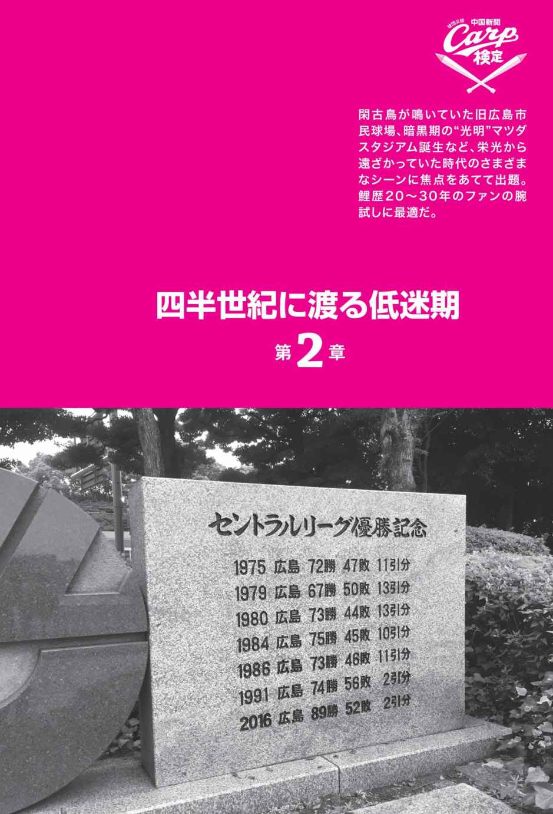

| 「中国新聞カープ検定」公式テキスト | |
| 「中国新聞カープ検定」作問委員会 | |
| 株式会社あさ出版 (2017) | |
本書は横書きでレイアウトされています。
また、ご覧になるリーディングシステムにより、表示の差が認められることがあります。
はじめに
今年のカープ検定は会場決戦!!
中国新聞社が主催するカープ検定が、昨年よりスケールアップして帰ってきた。
中国新聞は1892年に創刊された、広島県を中心とした中国地方で販売されている一般紙。近年の"鯉の花盛り"で中国新聞はカープ情報が豊富だ、と全国の鯉党に知れわたった。特に名物コラム「球炎」は全国ファンが読みたい最たるもので、販売エリア外の読者にとり羨望の的となっている。時に厳しく、時には手放しでカープを賞賛する内容は「まさにファン目線！」と共感を呼んでいるのだ。
このようにカープの情報においては、他の追随を許さない中国新聞。同紙が主催する検定となれば、"決定版"に他ならない。作問には広島市在住のネイティブ鯉人、私設応援団の元団長、カープ関連の書籍にたずさわる広島市出身のライターなども参加している。
今年の検定はクラス別方式で実施。初級にあたる３級は昨年同様、ＷＥＢ上での受験となるが、中級・上級に相当する２級・１級は広島、京都、千葉の３主要都市の大学などの会場を借りて、大々的に敢行する。本番の検定試験は各級１００問を出題。時間制限もあるので、ペース配分の戦略もたてておいた方がいい。あなたのカープ愛を試す、千載一遇のチャンスとなるはずだ。
まずはその日に備えて、この公式テキストで検定の"傾向と対策"を探ってほしい。カープファン歴の短い"鯉 歴 "2年未満の人たち向けの問題、家族で知恵を出し合って解ける問題も用意。筋金入りの鯉歴20年以上の強者には、本書後半の難易度の高い問題に果敢に挑んでもらいたい。検定に向けて赤魂を燃やせ！ 健闘を祈る！
本書の使い方＆心得
その１ カープ愛なきものは去れ！
この心得のネタ元は何だろう。 P191-Q175 を確認！
その２ 本番で同じ問題が出てくるとは限らない！
例えば、選手の背番号問題には要注意！ 組み合わせ問題、歴代背番号など本番で同じものが出るとは限らない。２級以上を目指す人は、本書の内容全般を頭に入れておこう。ヤマを張らないのが学習のポイントだ。会場検定はマークシート方式を採用、4択問題。
その３ 本書にコリジョンルールはない！
トボケタ選択項目があったら、迷わず突っ込もう！ その項目の正解率は低いはずだ。例えば、ファンが得点するたび合唱する歌は「江田島さん」じゃない（ P43-Q37 ）。消去法で答えを導くことも大事。
その４ "鯉歴 "2年未満のファンでも勉強次第で２級にチャレンジ！
３級の問題は、カープ人気に拍車が掛かったCS初出場から昨年の優勝までを中心に出題される可能性が高い。鯉歴2年未満のファン、家族で３級にチャレンジしてみたい人は、第1章、第3章、第4章を手始めに色々なことを学んでみよう。鯉歴の浅いファンはカープのことなら何でも知りたい盛りのハズ。その勢いで２級にも挑め！
その５ ファン同士のコミュニケーションツールにもなる！
球場やファンの集まる店に持ち込んでカープ愛を確かめるツールにしよう。問題の次ページに正解と解説があるので、スピーディーに学べる。
JASRAC 出 1708862-701
Q001
2月3日の節分の日、カープでは新助っ人が「恵方巻き」を食べるのが恒例となっていたが、ミゲル・ソコロビッチやザック・フィリップス、そしてマイク・ザガースキーら故障者が続出。そのため2016年シーズンから、この行事は"中止"となったが、2017年に加入したライアン・ブレイシアは、恵方巻きを食べる代わりにあるものを投げつけるパフォーマンスを披露した。そのあるものとは？
①クッキー ②大福餅 ③豆 ④落花生
Q002
2017年のカープのキャッチフレーズは？
①カ舞吼！
②歌舞伎
③かぶく！
④火舞瑠！
A001
④落花生
「恵方巻き」を食べた助っ人選手が、連鎖的に故障した現象は、「恵方巻きの呪い」として「東京スポーツ」を発信源に週刊誌などでも取り上げられた。球団は恵方巻きとの関係を否定しながらも正式に中止を決定。2017年から変更された豆まきは、助っ人たちにも好評でライアン・ブレイシアは「ピーナッツを人にぶつけるなんてはじめてだよ！」と無礼と知りつつ上機嫌のコメントを出した。しかし、掲載された写真を見ると彼が豪快なフォームで投げつけていたのは、なんと、カラ付きの落花生。地面に落ちても衛生的との配慮からか、または防御率が落ちても、ヒト皮むけば大丈夫との縁起担ぎなのか......真相はカラッキシ分からない。
A002
①カ舞吼！
2017年のキャッチフレーズは歌舞伎の語源、"傾 く"をもとにしている。この言葉は常識にとらわれない行動や身なりをするという意味があり、その意にふさわしい、カープらしい野球を実践していこうとの決意が込められている。"「カープ」らしく「舞」い、「吼」えながら戦っていく"ということから「カ舞吼！」。過去のキャッチフレーズは英語が多かったのに対して、近年は漢字の造語を掲げる傾向がある。ちなみに初優勝の時のキャッチフレーズは、シーズン途中で監督が交代したため、2種類が存在する。
Q003
2017年カープで最初にタイムリーヒットを放ったのは誰？
①鈴木誠也
②菊池涼介
③石原慶幸
④ブラッド・エルドレッド
Q004
2017年カープが初勝利を挙げた試合で先発した投手は誰？
①野村祐輔
②クリス・ジョンソン
③横山弘樹
④岡田明丈
A003
③石原慶幸
カープの2017年シーズン初となるタイムリーヒットは、開幕戦で阪神相手に石原慶幸が放ったもの。０−２でカープが後を追う形で迎えた2回裏の2アウト2塁、石原は２ストライクまで追い込まれたものの見事にタイムリーヒットを放ち、スコアを１−２とした。初タイムリーと同時に、これは2017年の球団初得点でもある。
A004
④岡田明丈
2017年、カープがシーズン初勝利を収めた試合はホームのマツダスタジアムで4月1日に行われた対阪神戦。先発したのは2015年のドラフトで1位指名された新鋭の岡田明丈だったが、4回を投げて5安打6失点と散々な結果に。しかし、試合そのものは驚異の粘りで延長10回裏にカープがサヨナラ勝ちを収めている。
Q005
2017年5月28日に対巨人戦7連勝を飾ったが、これはいつ以来の出来事か？
①1989年
②1975年
③1979年
④1974年
Q006
2017年4月27日に巨人戦に登板した大瀬良大地は、何日ぶりに先発として勝利投手になったか？
①230日
②332日
③724日
④221日
A005
②1975年
2017年シーズンの５月28日の試合では、２−２の同点から延長戦を制して対巨人戦の７タテを決めたが、これは1975年以来、42年ぶりの快挙となった。1975年はカープが初優勝した年で、一方、巨人のセントラルリーグの最終的な順位は最下位と低迷していた。７連勝は優勝を決めたカープと低迷した巨人の勢いの差を象徴するようだ。
A006
③724日
大瀬良大地は2013年ドラフト1位で入団。プロ1年目の2014年は、新人投手ながらも開幕ローテーション入りを果たし、26試合を投げて10勝8敗の成績を収めた。しかし2015年は、5月4日の登板で勝利をした後、シーズン前半の6月3日の対日本ハム戦を最後に先発から中継ぎに配置転換される。この試合では6回3分の1を投げ4失点し、試合も５−０で負け投手となってしまった。2016年はそのまま中継ぎとして活躍し、2017年シーズンでは約2年ぶりに先発に復帰して、巨人を相手に7回を4安打に抑えた。試合も１−０でカープの今季初となる完封勝利。その後、6月末まで12試合に先発登板して5勝負けなしの頼もしい成績だ。
Q007
2017年6月3日、対ロッテ戦で初打席初本塁打を放ち、鮮烈なデビューを飾ったサビエル・バティスタ。彼のスペイン語通訳であるクレート氏の球団でのもうひとつの仕事は？
①用具管理
②ブルペン捕手
③ブルペン投手
④トレーナー
Q008
緒方カープが初めて首位に躍り出た、2016年4月12日の対戦相手は？
①阪神
②中日
③巨人
④ヤクルト
A007
②ブルペン捕手
サビエル・バティスタのお立ち台インタビューで、クレート氏の通訳内容が面白くてかわいいと話題になり、TVなどのメディアにも取り上げられた。しかし、このクレート氏は通訳が本業ではない。外国人選手の発掘と育成を目的とし、1990年にドミニカ共和国に作られたカープアカデミーを通じ、ブルペン捕手として来日している。同国出身のバティスタも同じくカープアカデミーを通じて入団しており、日本滞在歴の長いクレート氏が通訳を務めたのだ。
A008
②中日
カープに入団して以来、FA権を獲得した後も残留してプレーし、引退後はコーチとしてチームに貢献したカープ一筋の緒方孝市。監督に就任した2015年は4位という振るわない結果に終わったものの、翌2016年には1991年以来25年ぶりとなるリーグ優勝へとチームを導いた。しかも最終的に、勝率.631、2位の巨人に17.5ゲームという大差をつけており、他球団の追撃を許さない圧倒的な強さを緒方カープは見せた。この緒方カープがリーグ首位に躍り出た節目の試合は、2016年の４月12日の中日戦で３−１で勝利を収めている。
Q009
新井貴浩が2000本安打を放った、2016年4月26日ヤクルト戦でチームとして11年ぶりの3連発を放ったのは？
①ブラッド・エルドレッド、鈴木誠也、堂林翔太
②丸佳浩、新井貴浩、ブラッド・エルドレッド
③ブラッド・エルドレッド、堂林翔太、下水流昂
④菊池涼介、丸佳浩、ブラッド・エルドレッド
Q010
2016年破竹の11連勝の口火を切った、史上初のコリジョンルール適用によるサヨナラ勝ちをおさめた試合で、ホームに突入したのは菊池涼介だが、その前にヒットを打った選手は？
①鈴木誠也
②丸佳浩
③安部友裕
④赤松真人
A009
①ブラッド・エルドレッド、鈴木誠也、堂林翔太
このときのヤクルト戦ではカープ打線が炸裂。2回表にはブラッド・エルドレッド（7号）、鈴木誠也（1号）、堂林翔太（2号）の3人が連続でソロホームランを放ったのをはじめ、7回表には鈴木誠也がこの日2発目となる満塁打を放ち、9回表にはエルドレッドもダメ押しとなる2発目のソロホームランを放った。もちろん試合結果は11−３と計5本のホームランが出たカープの圧勝。
A010
④赤松真人
2016年6月14日の西武との試合では、9回裏1アウト1、2塁（2塁に菊池涼介）から赤松真人がヒットを放った。菊池涼介のホームへの走塁に対して審判の判定はアウトだったが、緒方孝市監督の抗議でビデオ判定となり、結果が覆った。
Q011
"神ってる"鈴木誠也が、2016年6月のオリックス戦で放った3試合連続決勝弾。さて、カード最終日、19日の本塁打の推定飛距離は？
①125m
②140m
③135m
④133m
Q012
2016年9月10日、何があった？
①カープが日本シリーズで日本ハムに敗れた
②「神ってる」が流行語大賞に選ばれた
③カープがＣＳ進出を決めた
④カープ25年ぶりのリーグ優勝
A011
③135m
その活躍がチームの好調を象徴するような鈴木誠也。2016年６月に行われたセ・パ交流戦でのオリックスとの3連戦で、初日の17日にサヨナラホームラン、続いて18日にも2試合連続となるサヨナラホームランを放っている。これは1984年の長嶋清幸による巨人戦での記録以来、32年振りの快挙。鈴木誠也の好調はそれだけに止まらず、さらに3戦目にも決勝打となるホームランが飛び出した。
A012
④カープ25年ぶりのリーグ優勝
2016年は絶好調だったカープ。シーズンの序盤に首位に立つと、その後も好調のまま中盤の交流戦を折り返し、後半戦はほぼブッちぎりの独走状態だった。そして、9月10日には巨人戦に勝利し、10試合以上を残して25年ぶりとなるリーグ優勝を決めた。その後、セ・リーグのクライマックスシリーズも制して日本シリーズに挑んだものの、日本一のタイトルは惜しくも日本ハムに譲る結果となった。
Q013
1975年の初優勝と2016年の優勝を決めた時の対戦チームは？
①巨人
②ヤクルト
③阪神
④中日
Q014
菊池涼介はシーズン捕殺数の歴代上位3位を独占する記録を打ち立てているが、1位の記録（535）は何年に達成した？
①2012年
②2013年
③2014年
④2016年
A013
①巨人
2016年にセントラルリーグでの優勝が決定したのは、9月10日に東京ドームで行われた巨人との試合。この試合は６−４でカープが制している。奇しくもカープが初優勝を決めた1975年のシーズンでも相手は同じく巨人。2016年同様にアウェーの後楽園球場で４−０と完封して勝利している。
A014
③2014年
2012年に1軍デビュー、翌13年からレギュラーに定着し、2013〜16年には４年連続ゴールデングラブ賞受賞という守備力の高さで知られる菊池涼介。なんとシーズン毎の歴代捕殺ランキングでは2013、14、16年の記録で1〜3位を独占している（すべてセカンドとしての記録。13年の記録はショートのポジションのものも含めると544になる）。数字が挙がっていない2015年のシーズン捕殺記録にしても484とわずかに500には届かなかったものの非常に高い記録を残している。通算記録はどこまで伸びるのか、ファンならずとも期待が高まる。
Q015
2016年に最多安打のタイトルを獲得した菊池涼介が放った安打数は？
①189
②191
③181
④183
Q016
2016年のクライマックスシリーズで田中広輔が記録した驚異の打率は？
①.882
②.781
③.822
④.833
A015
③181
シーズン捕殺数歴代トップ3独占、ゴールデングラブ賞4年連続受賞と、菊池涼介といえばまず卓越した守備力を連想される向きも多いかもしれないが、打席に立っても大変優れた成績を残している。リーグ優勝を果たした2016年には181安打を叩き出し、セ・リーグの最多安打を記録した。
A016
④.833
これはクライマックスシリーズ・ファイナルステージでのセ・リーグ3位の対横浜戦における田中広輔の打率だ。なんと12打数10安打で打率は.833！ さらに4打点を叩き出し、ホームランも1本飛び出した。この常人離れした活躍で、2016年クライマックスシリーズの最優秀選手にも選ばれている。
Q017
2016年日本シリーズの対日本ハムとの初戦で、本盗と二盗のダブルスチールを決めたふたりの選手は？
①菊池涼介・安部友裕
②丸佳浩・菊池涼介
③鈴木誠也・安部友裕
④石原慶幸・小窪哲也
Q018
日本シリーズ史上、最低となる打率.000という残念な新記録を樹立してしまった石原慶幸。その打数は？
①15打数
②16打数
③10打数
④12打数
A017
③鈴木誠也・安部友裕
2016年10月22日の日本シリーズ初戦は、カープが５−１で日本ハムに勝利を収めたが、2回裏に1塁と3塁からのダブルスチールが決まるという珍しいシーンがあった。ダブルスチールを決めたのは鈴木誠也（3塁）と安部友裕（1塁）。1アウト1、3塁で打席に立っていた石原慶幸は空振り三振に倒れたが、1塁の安部がスタートを切り、2塁送球の間に鈴木が3塁からホームスチールを決めて先制点を奪取した。
A018
②16打数
2016年シーズンを通して2割強という芳しくない打率を記録していた石原慶幸だが、この年の日本シリーズでは6試合すべてに出場し、19打席に立つも16打数3三振で安打ゼロというさんざんな結果に終わった。しかし、守っては経験豊富なキャッチャーとして、失策ゼロで貢献している。
Q019
カープが誇る同級生カルテット、「タナ、キク、マル、アベ」。誕生日が早い順にすると、正しい並びは？
①安部友裕→田中広輔→菊池涼介→丸佳浩
②菊池涼介→安部友裕→丸佳浩→田中広輔
③田中広輔→丸佳浩→菊池涼介→安部友裕
④丸佳浩→安部友裕→田中広輔→菊池涼介
Q020
カープ投手陣の「カピバラ3兄弟」と言えば、今村猛、大瀬良大地、一岡竜司のことを指すが、3人の背番号を合計した数は？
①30
②50
③60
④58
A019
④丸佳浩→安部友裕→田中広輔→菊池涼介
同級生カルテット、「タナ、キク、マル、アベ」とは1989年度（1989年4〜12月、1990年1〜3月）に生まれた４選手のことだが、丸佳浩は1989年４月11日、安部友裕は6月24日、田中広輔は7月3日、菊池涼介は1990年3月11日生まれである。
A020
③60
今村猛、大瀬良大地、一岡竜司、の3人がカピバラという動物に雰囲気が似ていることから、また3人とも投手で一緒に居ることが多いことから「カピバラ3兄弟」という呼称がインターネット上から流行り出し、定着した模様。大瀬良が先発、一岡が中継ぎ、今村が抑えで登板することをカピバラリレーとも呼ぶ。背番号は、今村が16番、大瀬良が14番、一岡が30番で合計すると60になる。
Q021
2016年セ・リーグ優勝記念パレードは、合計3回行われた。その場所は広島と沖縄、あと1カ所の市の名前は？
①都城市
②別府市
③三次市
④日南市
Q022
マツダスタジアムで流れる「それ行けカープ」、何人で歌っている？
①7人
②12人
③15人
④10人
A021
④日南市
2016年のリーグ優勝を祝って、本拠地である広島県広島市で11月5日に優勝パレードが行われた。1975年の初優勝以来２度目となるパレードには広島市民のみならず全国のカープファンが集まり選手たちと共に優勝を祝った。パレードのコースとなった当日の平和大通りの人出は30万人を超えた。また本拠地だけでなく、キャンプ地でも優勝パレードが行われている。宮崎県日南市では翌年の2月5日に、同じくキャンプ地である沖縄県沖縄市では2月25日に優勝パレードが開催された。
A022
②12人
「それ行けカープ〜若き鯉たち〜」は初優勝した1975年のシーズン半ばにそれまでの「広島カープの歌」に代わる新たな球団歌として制作された。現在ではホームの試合の際には７回の攻撃前やカープ勝利後などのタイミングで流されている。また著名人達がリレーで唄う映像が試合開始前に流されていて、同映像はYouTubeでも試聴できる。このMVにはさまざまなバージョンがあり、2017年バージョンでは、槇原敬之、塩見大治郎、鈴木福、内藤哲也、谷原章介、島谷ひとみ、市川弘太郎、松田美里（わーすた）、小林克也、宇治原史規、尾関高文、岸田繁の計12人が出演している。
Q023
2016年最も売れたカープグッズは？
①優勝記念タオル
②優勝記念Ｔシャツ
③黒田博樹ユニフォーム
④優勝記念バッジ
Q024
黒田博樹・新井貴浩両選手が電撃復帰した2015年。このシーズンは久しぶりの本拠地開幕となったが、これは何年ぶりの出来事だったか？
①10年ぶり
②15年ぶり
③13年ぶり
④20年ぶり
A023
②優勝記念Tシャツ
優勝した年だけにそれを記念したグッズが人気を集めた。とりわけ販売数が多かったのは優勝記念Tシャツだった。広島のテレビ局調べによると24万枚が販売された。
A024
③13年ぶり
2015年3月27日、ヤクルト相手に行われた開幕戦はマツダスタジアムで開催された。これは2002年の横浜相手の開幕戦以来。2015年の開幕戦本拠地開催は前年の2014年のリーグ成績が3位でAクラスに入っていたからだが、2001年のカープは4位でBクラス。本来ならば開幕戦を本拠地で迎えることはできない。しかし、その年はイレギュラーで広島を含む全国6都市で開催が企画されていたため、2002年は本拠地開幕となった。
Q025
電撃復帰後の黒田博樹がマツダスタジアムで公式戦初登板した日は？
①2015年3月30日
②2015年3月28日
③2015年3月29日
④2015年3月25日
Q026
カープ復帰後の初打席は代打出場となった新井貴浩。さて誰の代打だったか？
①前田健太
②クリス・ジョンソン
③野村祐輔
④石原慶幸
A025
③2015年3月29日
1997年から2007年までカープでプレーし、2008年からメジャーリーグへ活躍の舞台を移した黒田博樹は2015年からカープに復帰した。復帰後初の公式戦登板はヤクルトとの試合だった。また開催地のマツダスタジアムが開場したのは2009年でメジャー移籍後のことだったため、そこでの登板も初となる。試合は２−１でカープが競り勝ち、先発した黒田は打者26人を相手に7回を投げて被安打5、奪三振5自責点0で勝利投手となった。
A026
①前田健太
広島市出身で1999年のプロ入りの時からカープでプレーし続け、2007年にはFA権を行使して阪神へ移籍した新井貴浩。2015年に古巣のカープに復帰したが、3月27日のヤクルトとの開幕戦で先発投手の前田健太の代打が復帰後の初打席となった。ヒットは放てなかったものの、FA権を行使して一度はカープを出て行った新井にファンは熱い声援を送った。このファンの声援なくして、彼の2015年・2016年シーズンの活躍はなかったと言ってよいだろう。
Q027
2014年の新人王に輝いた大瀬良大地、この年の成績は？
①11勝9敗
②10勝8敗
③11勝7敗
④10勝9敗
Q028
2013年、カープがクライマックスシリーズ初進出を決めたのはどこの球場？
①ナゴヤドーム
②マツダスタジアム
③甲子園球場
④横浜スタジアム
A027
②10勝8敗
ドラフト1位指名を受けてカープに入団した大瀬良大地。初めて勝利投手の栄誉を得たのは2014年４月16日の阪神戦でのこと。この試合では7回を投げ、5安打1失点で見事プロ初勝利をもぎ取った。10勝目を挙げたのは9月6日の横浜戦。この試合では１−０での初完封勝利という嬉しいおまけ付きだった。
A028
①ナゴヤドーム
2007年から導入されたクライマックスシリーズ。カープが初出場を果たしたのは2013年のことで、9月25日にナゴヤドームで行われた中日戦に２−０で勝利してリーグ戦の順位3位とクライマックスシリーズ進出が決定した。しかし、ファーストステージではリーグ2位の阪神を８−１、７−４と２連勝で下してファイナルステージへと進んだものの、巨人相手に今度は４連敗（巨人に1勝のアドバンテージ）を喫して敗退。
Q029
2013年クライマックスシリーズ・ファーストステージ対阪神戦の2戦目にスタメン出場していた外国人選手の正しい組み合わせは？
①エルドレッド・ロサリオ・バリントン
②エルドレッド・ニック・バリントン
③エルドレッド・ルイス・バリントン
④エルドレッド・キラ・バリントン
Q030
2013年10月3日の前田智徳の現役最後の試合で中日・平田良介は前田のもとへ凡フライを打ち上げようと試みたが、その結果は？
①セカンドゴロ
②ライトオーバーの２塁打
③ライトフライ
④ホームラン
A029
④エルドレッド・キラ・バリントン
７−４で阪神タイガースを下したクライマックスシリーズ・ファーストステージの第２戦目。先発投手はブライアン・バリントン（2011〜2014年カープ在籍）で５回を投げて１安打１失点で勝利投手に。打ってはブラッド・エルドレッド（2012年〜カープ在籍中）、キラ・カアイフエ（2013〜2014年カープ在籍）が共に1打点をあげて活躍した。
A030
①セカンドゴロ
ゴールデングラブ賞を獲得したことも首位打者争いを演じたこともある走攻守の三拍子が揃った前田智徳。多くの名選手から高い評価を受けた選手でもあったが、ケガに泣かされ、現役時代の終盤、2008年以降は、試合への出場は代打に限られていた。引退試合は2013年10月３日の本拠地マツダスタジアムでの中日ドラゴンズとの試合。8回裏の代打出場後も、ベンチに下がることなく9回表にライトの守備についた。ライトスタンドは大勢のカープファンで埋め尽くされており、球団の粋な計らいだった。そして対戦相手の中日も引退に花を添えるべく、５年ぶりの守備についた前田のもとへ凡フライを放とうとしたのだが......。
Q031
2013年ドラフト会議で大瀬良大地を引き当て話題になった担当スカウトの名前は？
①山村正
②田村恵
③谷村新
④木村翔
Q032
中国新聞にカープファンを公言する漫画家たちのコラボによる2013キャンプイン広告が掲載された。この広告に参加した漫画家は何人？
①10人
②5人
③4人
④20人
A031
②田村恵
2013年ドラフト会議で大瀬良大地を指名した球団は、カープの他にヤクルト、阪神。交渉権の抽選でクジを引いたのは野村謙二郎監督でなく、スカウトの田村恵。前年は監督がクジを外してしまったのがその理由。田村スカウトは、高校生の時から大瀬良に注目していたが、その当時は大学進学のために指名を断念していた。４年越しのラブコールが実った瞬間だった。
A032
①10人
毎年キャンプインする2月1日に、カープは中国新聞にその旨の広告を載せ、一種の風物詩となっている。2013年の広告は、カープファンを公言する漫画家達が１コマずつコラボレーションした漫画だった。参加したのは田中宏、とだ勝之、川原正敏、安彦良和、乾良彦、かわぐちかいじ、野村宗弘、かきふらい、さだやす圭、東風孝広の計10人。
Q033
カープの創立年月日は？
①1949年3月10日
②1949年11月28日
③1950年11月28日
④1945年8月15日
Q034
カープがリーグ初優勝を飾った年月日は？
①1965年10月20日
②1975年9月10日
③1975年10月15日
④1970年10月10日
A033
②1949年11月28日
1949年９月に広島を地元とする自由党代議士（当時は公職追放中）の谷川昇、中国新聞社代表取締役の築藤鞆一、広島電鉄専務の伊藤信之の三者連名で広島カープの加盟を日本野球連盟に申請。これが許可され、新しく発足するセ・リーグに正式に加盟することが決まったのが、その年の11月28日だった。
A034
③1975年10月15日
後楽園球場での10月15日の巨人戦に４−０で勝利して初優勝を決めた。勝てば優勝という試合だったが、初優勝を目前にした選手たちが感じていたプレッシャーは、カープ黄金時代を築いた立役者のひとり「鉄人」衣笠祥雄をして「負けたら優勝はなかったと思う」と述懐させるほど並大抵のものではなかったようだ。
Q035
初優勝の時の監督は誰か？
①ジョー・ルーツ
②石本秀一
③白石勝巳
④古葉竹識
Q036
1975年から1980年代のカープ黄金期を支えた「ミスター赤ヘル」「鉄人」の異名を持つ偉大な二人の選手は？
①山本浩二・衣笠祥雄
②三村敏之・水谷実雄
③金本知憲・前田智徳
④江藤智・緒方孝市
A035
④古葉竹識
万年Bクラスのチームに敢闘精神を吹き込み「赤は戦う色だ」と赤ヘルを持ち込んだジョー・ルーツ監督（日本プロ野球界で初めてのメジャーリーグ出身監督）のシリーズ序盤の退任後、采配を引き継いだのが古葉竹識監督だ。古葉監督はルーツのイズムをそのまま引き継いでチームを優勝に導いた。
A036
①山本浩二・衣笠祥雄
山本浩二と衣笠祥雄は二人ともカープでプロ野球選手のキャリアをスタートさせ、引退するまでカープに在籍し続けたカープ一筋の選手だった。また学年も1946年度と同じである。通算成績2339安打、536本塁打（山本浩二）と2543安打、504本塁打（衣笠祥雄）という数字が示す通り、二人が名を連ねる強力打線は、カープが黄金時代を築くのに多大な貢献を果たした。YK砲と呼ばれたアベックホームランの数も、王貞治・長嶋茂雄のON砲に次ぐ歴代2位である。二人の背番号（山本８と衣笠３）はカープの永久欠番となった。
Q037
カープが得点するたびにファンが合唱する歌は？
①おみくじさん
②似島さん
③江田島さん
④宮島さん
Q038
立ったり座ったり、カープ独自の応援方法を何という？
①ダイエット応援
②アップダウン・コール
③スクワット応援
④ジャンプアップ応援
A037
④宮島さん
戦前から高校野球の強豪校があり、野球が盛んな土地柄だった広島。そんな広島ならではの替え歌応援歌が「宮島さん」だ。カープの試合では得点が入った時によく唄われるこの応援歌、広島市内では小学校の運動会でも唄われるほど馴染みが深いとか。
A038
③スクワット応援
スクワットは膝の屈伸を繰り返すことで、下半身を鍛える筋力トレーニングのことである。応援中に立ったり座ったりを繰り返す動作がこのトレーニングに似ていることからスクワット応援と呼ばれるようになったようだ。この変わった応援方法の始まりは90年代に試合を観戦していた地元の学生達がやり始めたものと言われている。その後、徐々に広がり、今ではすっかりカープファンに馴染み深いものとなった。
Q039
♪○○○暁〜○○をくみかわそう 栄冠手にする〜♪これは「それ行けカープ」の4番の冒頭の歌詞。空欄に該当する二つの言葉は？
①晴れの・旨酒
②真赤な・生酒
③曇りの・安酒
④明日の・祝杯
Q040
プロ野球におけるトランペット応援の発祥地は旧広島市民球場。さて、そのトランペットを持ち込んだのは？
①広島市職員
②広島商業応援団
③広陵高校応援団
④広島経済大学の学生
A039
①晴れの・旨酒
1975年制作のカープの応援歌「それ行けカープ〜若き鯉たち〜」の4番の出だしは「晴れの暁 旨酒をくみかわそう」。この応援歌の歌詞を書いたのは有馬三恵子で、多くの歌手や俳優に歌詞を提供した作詞家である。ちなみに当時存在した「カープを優勝させる会」のメンバーでもあった。
A040
④広島経済大学の学生
1970年代後半、広島カープサポーターズと呼ばれた応援団がトランペットを使用した応援を始めたのが最初だとされる。同時期には山本浩二の個人応援歌も作られていた。選手個人の応援歌やトランペットなどの鳴り物応援は、今やどこの球団でも珍しいものではなくなり、日本独特の野球応援スタイルとすら言われるようになった。選手の気持ちを盛り上げようという熱心なカープファンの応援スタイルが、現在の日本のスタンダードな野球観戦の情景を作ったと言えるのかもしれない。

Q041
元祖"二刀流"フェリックス・ペルドモが初めて投手として登板した試合で、最初に三振を奪ったのは誰から？
①清原和博
②ジェフ・マント
③松井秀喜
④バルビーノ・ガルベス
Q042
1999年5月8日、佐々岡真司が中日戦でノーヒットノーランを達成した際、エラーをした広島の選手は？
①東出輝裕
②江藤智
③野村謙二郎
④エディ・ディアス
A041
④バルビーノ・ガルベス
フェリックス・ペルドモは母国ドミニカ共和国にあるカープアカデミーを通じて1992年に入団。その後、カープを離れて台湾でプレーしていた時期もあるが、1996年から再びカープでプレー。翌年には内野手から投手に転向して中継ぎ投手として活躍、1999年からは内野手と投手の二刀流となった。初めて投手として出場したのが1997年４月15日の巨人戦。その試合で初三振を奪ったが、そのときの打者は同じドミニカ共和国出身の投手バルビーノ・ガルベスだった。
A042
③野村謙二郎
1990年代のカープで先発中継ぎ抑えと八面六臂の活躍をした佐々岡真司。一時不調に陥ったこともあったが、1999年には15勝を挙げている。しかも、15勝の内容は完投勝利が13回のうち、完封5回というその年のセ・リーグトップとなる好成績だった。さらに5月8日のドラゴンズ（その年のリーグ覇者）との試合では４−０と完封しただけでなく、自身初となるノーヒットノーランを達成している。このときエラーをしてしまったのが巧みな打撃と俊足の名選手として知られた野村謙二郎だった。
Q043
1999年 9月14日、ヤクルト戦でホームランをレフトフライと勘違いした一塁走者の新井貴浩を追い抜いてアウトになってしまった選手は？
①アルフォンソ・ソリアーノ
②アレファンドロ・ケサダ
③エディ・ディアス
④ ルイス・ロペス
Q044
赤松真人の「スパイダーキャッチ」のように、1994年の横浜戦で外野フェンスを伝いながらホームラン性の打球をキャッチしたのは誰？
①緒方孝市
②音重鎮
③仁平馨
④マーティ・ブラウン
A043
③エディ・ディアス
ベネズエラ出身のエディ・ディアスは1999〜2002年の間、カープに在籍した外国人選手だ。2001年には打率3割超え、32ホームランと打撃面でチームに大きく貢献した。問題に出ているエピソードは来日1年目で起きた珍事で、せっかく打ったホームランは取り消しとなってしまった。
A044
②音重鎮
1991年に長嶋清幸との交換トレードでカープに移籍して来た音重鎮。外野手として活躍し、1994年の横浜ベイスターズとの試合では問題に出ているように、ホームラン性の打球をフェンスによじ登った後、さらに1ｍほど横に移動してキャッチした。仮にボールの落下地点の予測を誤ったにせよ、見事なフォローと捕球への執念だ。
Q045
1996年の第32回ドラフトにおける、カープの指名選手順位で正しいものを答えよ
①澤崎俊和・黒田博樹・河野昌人・福良徹
②澤崎俊和・黒田博樹・福良徹・河野昌人
③黒田博樹・澤崎俊和・福良徹・河野昌人
④黒田博樹・澤崎俊和・河野昌人・福良徹
Q046
2005年、日本球界初の試みとして審判にボールを渡す役目であるボールボーイならぬボールドッグを務めたゴールデン・レトリバーの名前は？
①サッチー
②ジャッキー
③ジョッキー
④ミッキー
A045
①澤崎俊和・黒田博樹・河野昌人・福良徹
澤崎俊和（青山学院大学）、黒田博樹（専修大学）、河野昌人（龍谷高）、福良徹（新野高）の順で指名された。このうち上位３人は投手で、その年の投手陣強化の意図が窺える。また澤崎俊と黒田は逆指名。澤崎は2005年のシーズンを最後に引退し、現在はカープでコーチ。黒田は一時メジャーリーグに行っていたが、カープに復帰し2016年のリーグ優勝を見届けて引退。河野はのちに福岡ダイエーホークスに移籍し引退（2017年死去）。福良は2001年に引退している。
A046
④ミッキー
さまざまな新しい取り組みが見られるのもカープの魅力。その一例に審判にボールを渡す役目を人ならぬ犬に任せたボールドッグがある。この日本球界初の試みという大役を、7歳という犬としては高齢にもかかわらず、見事に果たしたのはゴールデン・レトリバーのミッキーだった。ソフトバンクとのオープン戦（2005年3月12日旧広島市民球場）でデビューし、公式戦にも登場した。ミッキーのかわいらしさはすぐさま観衆の心を鷲掴みにし、チームの成績が振るわない中、観客動員に貢献した。なお、残念ながらミッキーは2009年に死亡し、カープは訃報があった後の試合で球団旗を半旗にして、その死を悼んだ。
Q047
1996年、最大11.5ゲーム差を巨人にひっくり返された「メークドラマ」の契機とされる、2回2アウト走者なしから9者連続安打で一挙7点を奪われて逆転負けを喫した試合が行われた球場を答えよ。
①札幌市円山球場
②旭川スタルヒン球場
③釧路市民球場
④函館オーシャンスタジアム
Q048
2007年に現役を引退した佐々岡真司の旧広島市民球場での最後の登板で、佐々岡からホームランを打った選手を答えよ。
①古田敦也
②村田修一
③池山隆寛
④鈴木健
A047
①札幌市円山球場
1990年代半ばの野球関連ニュースでは「メークドラマ」という造語が一世を風靡した。この言葉を最初に口にしたのは巨人の長嶋茂雄監督（当時）。1996年はシーズン半ばまでカープが首位を独走していたが、7月9日に札幌市円山球場のカープ戦に勝利したときから、それまで4位に低迷していた巨人の快進撃が始まり、ついにはリーグ優勝を果たす。
A048
②村田修一
1990年の初登板初先発初勝利という劇的なデビュー戦から18年、カープ一筋で投げ続けた佐々岡真司も2007年のシーズン終盤にはついに引退を表明。10月6日に行われた横浜戦が引退試合となった。9回表2アウトで走者なしというタイミングで登板したが、その年のホームラン王である村田修一の強烈な一発を浴びる。ちなみに①の古田敦也も同年に引退。その引退試合（10月7日）に、前日に自分の引退試合を終えた佐々岡がスポットで登板し、ショートゴロに打ち取った。
Q049
カープアカデミー出身者で初めて公式戦に出場したのは？
①フェリックス・ラミーレス
②エジソン・レイノソ
③フェリックス・ペルドモ
④カルロス・リベラ
Q050
監督として最多の退場記録を持っているのは？
①マーティ・ブラウン
②ジョー・ルーツ
③古葉竹識
④石本秀一
A049
④カルロス・リベラ
カルロス・リベラは投手で1994年にカープに正式に入団し、カープアカデミー出身者としては初めて公式試合に出場した。しかし、結果を出せずに同年退団。フェリックス・ラミーレスは1995年に入団するも１軍昇格せず退団。フェリックス・ペルドモがカープで最初に公式戦に出場したのは1996年。エジソン・レイノソは1999年。
A050
①マーティ・ブラウン
監督として12回の退場処分という大記録（？）を持つマーティ・ブラウンは、2006〜2009年にかけてカープの監督を務めた。8回がカープ監督時代のもので、残り4回は楽天ゴールデンイーグルスの監督を務めていたとき（2010年）のものである。怒りのベース投げは、Ｔシャツにもなり話題となった。大好物は、チーズ入りのお好み焼きで、奥様は広島の人。
Q051
カープ在籍時の通算奪三振1位は川口和久（1938）、2位は佐々岡真司（1806）。では3位は？
①大野豊
②外木場義郎
③長谷川良平
④北別府学
Q052
マツダスタジアム完成時、当時の野村克也楽天監督が「なんで○○て見なきゃアカンのや。こっちはクビをかけてやってるのに。マナー違反だ！」をボヤかせたシートは？
①寝ソベリア
②パーティーグリル
③鯉桟敷
④ラグジュアリーフロア
A051
④北別府学
正解は1757の通算奪三振記録を持つ北別府学。大野豊の通算奪三振数は1733、外木場義郎は1678、長谷川良平は1564。
A052
①寝ソベリア
寝転がったまま試合観戦ができるシート「寝ソベリア」。2009年6月16日に初めて訪れたカープの新本拠地マツダスタジアムでそれを見た楽天の野村克也監督がボヤいたという。寝ソベリアへの反発が野村克也監督の采配に一層のキレ味を与えたのか、翌17日の交流戦では２−５でカープは敗れた。
Q053
マツダスタジアムの地下に設けられた全国でも珍しい施設は？
①天然芝保温装置
②雨水貯留池
③鉄道車両基地
④特別避難施設
Q054
セミを背中に付けたままホームランを打ち、セミとともにダイヤモンドを一周したのは誰？
①レスリー・フィルキンス
②ロデリック・アレン
③ジェフ・ボール
④ジミー・ハースト
A053
②雨水貯留池
球場の地下にある雨水貯留池は正式名称を大州雨水貯留池といい、近年珍しくなくなった局地的な豪雨による都市型水害に対する備えとして整備された。それだけでなく、球場に降った雨水を集めて濾過消毒処理を施した上で、トイレ用水やグラウンドへの散水として利用したり、周辺のせせらぎ水路（雨音の小径）に流したりと、雨水という水資源を有効に利用している。それにより、広島市は2009年国土交通大臣賞受賞「循環のみち下水道賞」を受賞した。
A054
②ロデリック・アレン
1989〜1991年までカープにいたロデリック・アレンは打撃でチームに貢献した選手。問題文のセミのほかにも彼がカープで残した逸話というと、大洋ホエールズ戦で相手投手を外野まで追いかけまわして退場処分を食らった乱闘騒ぎがある。
Q055
このなかで実際に採用されたチームスローガンは？
①レアル・サル・スエニョ
②ケセラ・セラ
③カーサ・デ・カルピオ
④テイク・イット・イージー
Q056
1999年7月25日のオールスターで緒方孝市がまさかのプレーを披露、なにをした？
①背面キャッチを失敗した
②走塁中にスパイクが脱げた
③インプレーなのにボールをスタンドに投げ入れた
④グラブを落とした
A055
①レアル・サル・スエニョ
1997年に採用されたキャッチフレーズで、「TOTAL BASEBALL R S REALIZAR SUENO」 というのは、夢をかなえるといった意味。1998年には「TENGA CONFIANZA」（自信を持て）というキャッチフレーズが使われており、この時期はスペイン語が流行りだったようだ。発案者はカープアカデミー出身選手や関係者なのだろうか。なお、「YES WE CAN 」と聞くとアメリカのオバマ大統領の選挙戦でのキャッチフレーズを思い浮かべる向きも多いと思うが、カープの1999年のキャッチフレーズも「YES , WE CAN」である。
A056
④グラブを落とした
1995年〜1999年に連続でゴールデングラブ賞を受賞していた名手、緒方孝市は1999年オールスターに初出場を決めたが、グラブを落とすという凡ミスを犯してしまった。
Q057
東洋大時代、複数の球団からマークされていた達川光男だが、ある試合でパスボールを連発。以来「さっぱりスカウトが顔を見せなくなった」というのだが、のちに達川が語ったパスボールを連発した理由とは？
①「サインを忘れた（間違えた）」
②「自分のミットを忘れた」
③「コンタクトを忘れた」
④「ぎっくり腰になった」
Q058
2007年、ソフトバンクとのオープン戦でユニフォームを忘れた前田智徳が借用したのは誰のユニフォーム？
①河内貴哉
②横山竜士
③會澤翼
④永田利則コーチ
A057
③「コンタクトを忘れた」
公式戦でもコンタクトを紛失して試合を一時中断させた珍プレーの常連・達川光男らしいエピソードだ。有名なコンタクト紛失事件は中日戦（1990年８月28日）で送りバントの処理をした際の出来事。
A058
①河内貴哉
2012年の選手名鑑によると、前田智徳は176cm・80kg、河内貴哉は188 cm・90 kgと身長体重ともに2ケタの差がある。とてもフィットしていたとは言い難い。現役時代から「生涯カープと決めていた」という河内貴哉は、ユニフォームを脱いだあと、球団広報としてカープを裏から支えている。
Q059
2009年6月14日、西武との交流戦でマーティ・ブラウン監督が内野5人シフトを敷いた際、二遊間で守備についた選手は誰？
①小窪哲也
②喜田剛
③赤松真人
④廣瀬純
Q060
サビエル・バティスタの出身であるドミニカ・カープアカデミーが創設された年はいつか答えよ。
①1985年
②1990年
③1992年
④1999年
A059
①小窪哲也
マーティ・ブラウン監督の特徴ある戦術といえば、内野手を５人、外野手を２人というシフト。このときの西武ライオンズとの試合ではレフトの小窪哲也が内野に入った。監督の作戦は見事にあたり、延長12回裏ノーアウト満塁というサヨナラのピンチをしのいで引き分けに持ち込むことに成功した。
A060
②1990年
カープアカデミーは1990年の11月に開校した。場所は首都があるサント・ドミンゴ州の東隣のサン・ペドロ・デ・マコリス州の州都サン・ペドロ・デ・マコリス。ドミニカ共和国では野球が国技のように盛んで、2013年のワールド・ベースボール・クラシックで優勝を果たすなど、世界屈指の野球大国だ。多くのメジャーリーグのチームもアカデミーをドミニカ共和国内に持っており、逸材を発掘育成している。
Q061
町田公二郎の持つ代打本塁打セ・リーグ記録は何本？
①22本
②17本
③20本
④14本
Q062
2007年に販売されたカープグッズのふんどしシリーズ「魔球」が作られるきっかけとなったナックルボールの使い手は誰？
①ファン・フェリシアーノ
②ジャレッド・フェルナンデス
③ケニー・レイボーン
④マイク・ロマノ
A061
③20本
90年代の代打の切り札といえば、町田公二郎、浅井樹の2人につきる。町田は代打満塁本塁打を放つなど鮮烈な印象を与えた選手であった。パワフルなスイングが持ち味で、"ここぞの一発！"が期待できた。現在は三菱重工広島野球部の監督を務めている。
A062
②ジャレッド・フェルナンデス
ジャレッド・フェルナンデスはカープと1年契約を結び2007年に来日したナックルボールを得意とした投手。カープグッズのなかでも、「一球入魂」「死球」など悪ノリがとりわけ激しいふんどしシリーズに彼のナックルボールに因んだ「魔球」などのラインナップが追加された。
Q063
セ・パ交流戦が開始された2005年のカープの交流戦順位は？
①4位
②8位
③11位
④12位
Q064
前田健太の初本塁打は、2008年9月28日、旧広島市民球場でのラストゲームのことだった。さて、この時、マエケンに本塁打を打たれたヤクルトの投手は？
①石川雅規
②館山昌平
③村中恭兵
④川島亮
A063
③11位
シーズン序盤こそ2位と好調だったものの翌月には一気に5位に落ち、最終的には最下位という結果に終わってしまった2005年のシーズン。この年はセ・パ交流戦という新しい試みが始まった年でもあるが、そこでの成績も11勝24敗1分けの勝率.314とやはり振るわず、11位に終わった。なお最下位は0.5ゲーム差で楽天。
A064
④川島亮
4回裏に川島亮からソロホームランを放った。これは前田健太のプロ初本塁打でもある。試合結果は7回以降の終盤に3点を奪取されて追い上げられたものの、前半のリードを守って６−３で逃げ切り、前田健太は勝利投手にもなった。約半世紀に渡ってカープと共に歩んだ旧広島市民球場、そこでの最後の公式戦がカープ勝利となり、有終の美を飾ることができた。
Q065
2010年8月4日の対横浜戦で赤松真人は村田修一のホームラン性の打球をフェンス上でキャッチ。この美技は「スパイダーキャッチ」として国内外で話題に。さて、その後の雑誌のインタビューでなんと言ったか？
①マツダスタジアムのフェンスは食い込みやすいので上がるだけなら誰でもできる
②マツダスタジアムのフェンスは低いので上がるだけなら誰でもできる
③マツダスタジアムのフェンスは高価なのでハラハラしながら上った
④マツダスタジアムのフェンスは破れやすいので慎重に上った
Q066
1995年6月3日の巨人戦（東京ドーム）でロビンソン・チェコが「2リーグ制以降、外国人選手として初めて記録」したのは？
①毎回与四球
②毎回奪三振
③初登板初完封
④2桁与四死球での完封勝利
A065
①マツダスタジアムのフェンスは食い込みやすいので上がるだけなら誰でもできる
マツダスタジアムの外野フェンスは緩衝材として、通常より高さも厚みもあって選手の安全性がより考慮されたラバーフェンスを設置している。この厚みのお陰でスパイクが食い込みやすく、足場にしやすいということだと推察される。マツダスタジアムでは、赤松真人だけでなく、天谷宗一郎も同年の8月22日の横浜戦でホームラン性の打球をフェンス上に飛び乗って捕球している。
A066
②毎回奪三振
1995〜1996年の間カープに在籍したロビンソン・チェコはドミニカ共和国出身の投手。一試合で合計13奪三振にもなる毎回奪三振という記録のほかにも、カープで初登板した際に完封勝利、初年度はチーム最多の15勝を挙げるという実績を残した。1997年からはメジャーリーグに移籍した。
Q067
全球ストレート勝負で三球三振に切って取られ、「津田のボールはクレイジーだ」と言った助っ人外国人選手は？
①ウォーレン・クロマティ
②ランディ・バース
③カルロス・ポンセ
④レオン・リー
Q068
前田健太がカープ時代に縁起をかついでグローブにかたどっていたものは？
①フクロウ
②招き猫
③昇り鯉
④とんぼ
A067
②ランディ・バース
阪神を日本一（1985年のただ1回のみ）に導いた助っ人外国人（1983〜1988年在籍）のランディ・ウィリアム・バースは、シーズン打率の日本記録を達成したり、 2年連続で三冠王に輝いたりと超が付く強力な打者だった。そのため敬遠されるなど、真っ向勝負を避けられることも少なくなかった。しかし、あえて勝負を挑む投手もおり、中でもカープの津田恒実は、同点で迎えた9回裏1アウト満塁のピンチという状況下、いずれも150km/hを超える剛速球で三球三振を奪った。
A068
④とんぼ
前にしか飛ばずバックできない蜻蛉 は不退転の象徴などとされ、勝ち虫とも呼ばれた縁起のいい昆虫だ。特に戦に関わる武士達に好まれて、兜の前立てから刀の鍔などの装飾のモチーフとして人気があった。この蜻蛉にまつわる話を聞いた前田健太も自分の使うグローブのデザインに取り入れた。
Q069
選手ロッカーに冷房機器がなかった旧広島市民球場に扇風機を寄贈した元ヤクルトの選手は？
①松元秀一郎
②古田敦也
③宮本慎也
④若松勉
Q070
マツダスタジアム初ホームランを打った選手は？
①和田一浩
②森野将彦
③栗原健太
④前田智徳
A069
③宮本慎也
球団創設当時も懐に余裕がなかったカープだが、それは世紀の変わり目前後の時期も同じだったようで旧広島市民球場の設備の不足や古さは指摘されつつも解消されていなかった。ビジターチームの選手ロッカーに十分な冷房設備が整えられてなかったというのも、球団の当時の窮状を示す例のひとつだ。そういう状況を見かねたのか、ヤクルトの宮本慎也と石井一久らがポケットマネーで扇風機を購入し、他球団の選手にもご自由にお使いくださいと提供した。
A070
①和田一浩
2009年４月10日の試合で中日の和田一浩が2回表に投手のコルビー・ルイスから打ったソロホームラン。これがマツダスタジアムで出た最初のホームランとなった。なお、同試合ではさらにもう1本、森野将彦によるツーランホームランが飛び出した。カープの選手による同球場初のホームランは、4月16日の横浜との試合で栗原健太が放ったソロホームランだった。
Q071
東出輝裕が現役時代、インターネットによる通信教育課程「eスクール」に入学したが、いったいどこの大学？
①日本大学
②慶應義塾大学
③広島大学
④早稲田大学
Q072
日本ハムの背番号1の投手と言えば斎藤佑樹。ではかつて、カープにも背番号1をつけた投手が２人いた。１人は野崎泰一、もう１人は誰？
①大久保美智夫
②大久保美智雄
③大久保美知男
④大久保美智男
A071
④早稲田大学
東出輝裕が早稲田大学人間科学部のeスクールに合格したのは2008年のこと。現役のプロ野球選手の合格は初めて。日本プロ野球選手会がセカンドキャリアを支援するために同課程の推薦枠を持っていることもチャレンジのきっかけとなったようだ。
A072
④大久保美智男
カープの背番号１といえば古くは白石勝巳、金山次郎、古葉竹識、近年なら断然、前田智徳の名前があがるだろう。全員が野手というのも共通項であるが、投手として背番号1をつけたのが野崎泰一と大久保美智男である。野崎は東急から移籍後、2年で引退。大久保は1978年のドラフト2位で入団し「1」を背負うが、1983年に野手に転向する時、背番号38に。野手として出場を果たせないまま1985年引退。
Q073
元カープ選手が経営する飲食店で、現存しないものを答えよ。
①2-3cafe
②Haraya
③亀山食堂
④たに川
Q074
前田智徳がテレビ朝日系列での解説時に時々、出現する「マエッター」で、2016年7月15日のオールスター第一戦時に、実際にはなかったつぶやきを答えよ。
①「（いちゃつくカップルを見て）なにやっとんじゃ！川崎球場じゃないぞ」
②「さあ、山田！山田は......見かけは普通やね」
③「大谷、ヘルメットのサイズ合ってないの？」
④「誤解されとるのぅ」
A073
④たに川
「トリオ・ザ・しんじ」の原伸次は十日市で鉄板焼きの店「Hraya」を営んでおり、東京の世田谷では元捕手の木村一喜が「亀山食堂」のマスターを務めている。「2-3cafe」はセットアッパーだった小林敦司が渋谷区代官山に2011年に開いたお店だ。
A074
④「誤解されとるのぅ」
テレビなどで活躍するようになって、現役時代には知りえなかった素顔をのぞかせるようになった前田智徳。選択肢の残り３つは実際に発信されたもので、ユーモアを交えた毒舌ぶりは、なかなかのものだ。正解の④は「北別府＆前田 ひと言日めくりカレンダー」より。
Q075
3連続KOのあと「もはやエースではない」と題された中国新聞の名物コラム「球炎」の記事をロッカーに貼った投手は？
①前田健太
②黒田博樹
③大竹寛
④北別府学
Q076
「トリオ・ザ・しんじ」の入団順を答えよ。
①原伸次→西田真二→高信二
②西田真二→原伸次→高信二
③高信二→原伸次→西田真二
④原伸次→高信二→西田真二
A075
②黒田博樹
2004年の開幕戦。黒田博樹は開幕投手として登板したが、5点リードをひっくり返され悔恨の涙を流した。後の登板もままならず、まさかの3連続KO。その頃「球炎」に掲載されたのが「もはや〜」の記事であった。黒田は記事を発奮材料とするためにロッカーに貼り、マウンドに登っていた。
A076
①原伸次→西田真二→高信二
原伸次は1980年ドラフト4位入団、西田真二は1982年ドラフト1位入団、高信二は1985年ドラフト2位入団。「おれたちトリオ・ザ・しんじだぞ〜」の懐かしい応援歌を、おぼえている人は多いのではないだろうか。原がトレードに出されたあと、トリオはどうなってしまうのかと心配されていたが、佐々岡真司によって救われたと漫画『赤ファンのつぶやき』に描かれている。
Q077
引退セレモニーで「これ以上練習しても、うまくならないと感じた。 そして今日もまた、練習の大切さを学びました」と語った選手を答えよ。
①衣笠祥雄
②山本浩二
③正田耕三
④大野豊
Q078
史上初めて「ホームベース踏み忘れ」で本塁打を取り消されたのは？
①マイク・デュプリー
②アート・ガードナー
③ティム・アイルランド
④エディ・ディアス
A077
①衣笠祥雄
鉄人の名言はこれだけにとどまらず、1996年にカル・リプケン・ジュニアに連続試合出場記録を抜かれた時「僕と同じ道を歩き、次の人が来てくれたのはうれしかった。これで、本音で話し合う人ができた」と喜びを露わにしたという。
A078
②アート・ガードナー
アート・ガードナーは1981〜1982年までカープに在籍。1年目は打率.281、26本塁打と好調だったが、2年目はさっぱりふるわず。この踏み忘れ事件は、入団1年目の7月19日のことであった。このガードナーの後に入ってきたのが"隠し玉"が必殺技のティム・アイルランドだった。
Q079
シーズンオフに主力選手が恒例のリハビリキャンプを行っている温泉地は？
①指宿砂蒸し風呂
②皆生温泉
③由布院
④黒川温泉
Q080
プロ初登板でめった打ちにあった大野豊が試合後、山本一義コーチにかけられた言葉は？
①「これでわかったじゃろ」
②「胸を張れ！」
③「死ぬなよ」
④「郷里に帰れ」
A079
③由布院
2016年オフは新井貴浩、一岡竜司ら18名の選手が参加。この付近の温泉は疲労回復、筋肉痛などに効能があるといわれており、スポーツ選手にとってはこの上ない療養地。リハビリキャンプは30年以上前から続けられており、同地とカープ選手の交流も盛んに行われている。
A080
③「死ぬなよ」
この試合、大野豊は満塁ホームランを含むヒット5本を打たれ、ふたつの四球を与えてノックアウト。自責点は5で防御率は驚異の135.00であった。故郷の出雲市から応援に駆け付けた人たちの眼前での屈辱。寮まで泣きながら帰ったという。この時、電話で山本コーチからかけられた言葉が「死ぬなよ」だった。
Q081
2005年の日南キャンプでの出来事。当時の山本浩二監督が愛飲していた幻の銘酒を"盗み飲み"し、罰則として背中に「○○○を飲んだのは私です」と貼り紙をつけて練習した木村一喜が盗み飲みした酒は？
①森伊蔵
②越乃寒梅
③豊盃
④越乃景虎
Q082
日本ハムの中田翔が少年時代、家を訪ねてサインを貰った選手は？
①東出輝裕
②緒方孝市
③黒田博樹
④江藤智
A081
①森伊蔵
背中の貼り紙は野村謙二郎が企てたことで、当の山本浩二監督はさほどご立腹でもなかった様子。この前の年、木村一喜は酒絡みでトラブルに巻き込まれていたこともあって「一喜だと思っていたよ。外で飲まないだけいいじゃないか」と山本監督は言ったそうだ。厳しいキャンプ中での息抜き的な場面となった。
A082
②緒方孝市
広島出身の日本ハムの中田翔。日本シリーズでカープと対戦する前に「カープは地元にある球団というだけで、別に応援していたわけじゃなかった」と挑発めいたことをテレビで話していたが、家を訪ねてまでサインを貰ったとなると熱心なカープ少年だったのではと思ってしまう......。
Q083
高橋慶彦が現役時代の1981年に出したレコードのタイトルは？
①「走れ！ タカハシ」
②「鯉の2番」
③「うわさのセクシークイーン」
④「赤い疾風〜それゆけスイッチヒッター〜」
Q084
カープ爺やこと安仁屋宗八が現役時代、カープファンに投げつけられたものとは？
①生たまご
②ビール
③カープうどん
④ジュース
A083
③「うわさのセクシークイーン」
すごいタイトルである。70〜80年代、野球選手がレコードを出すことは珍しいことではなく星野仙一、中畑清なども出している。我がカープのレジェンドもそのひとりだ。高橋慶彦が出したこの楽曲は2枚目のシングルで約5万枚売れたと本人は語っている。コーラス参加の楽曲を合わせると高橋は5枚のレコードを出している。
A084
③カープうどん
旧広島市民球場はフェンス際にブルペンがあったので、特に投手たちは調子が悪いとヤジの餌食になったという。安仁屋宗八いわく、物が飛んでくるのはあたりまえで、何度もカープうどんをかけられたそうだ。ガラの悪さは天下一品とまでいわれた旧球場。応援するカープの選手にこれだけのことをするとあらば、相手チームへの狼藉は自ずと想像がつこう。
Q085
梵英心の実家の寺は××宗○○派△△寺？
①浄土真宗本願寺派専法寺
②浄土真宗大谷派専法寺
③浄土真宗西本願寺派専法寺
④浄土真宗東本願寺派専法寺
Q086
往年のカープ選手たちに利用されたヘアーサロン「To kaichi」。ここで一番にパンチパーマをかけた選手は？
①山本浩二
②深沢修一
③水沼四郎
④ティム・アイルランド
A085
①浄土真宗本願寺派専法寺
梵英心の実家のお寺は三次市にある。江戸時代初期から続く由緒ある歴史があり、現在、兄の大英が副住職を務めている。梵も浄土真宗の敬けんな信者で、日産自動車時代、社会人野球大会で京都へ訪れると西本願寺にお参りに行っていたそうだ。
A086
①山本浩二
カープ黄金期のレジェンド選手たちの強面ぶりは、若いファンの間でも取り沙汰されている。その象徴であるパンチパーマは、旧広島市民球場近くの「To kaichi」でかけられた。パイオニアである山本浩二だけでなく、大野豊、山崎隆造などもこの髪型をチョイス。
Q087
ノーヒットノーランを達成したあとのインタビューで「なんならもう一度やってみせましょうか」との名言を残した投手は？
①金城基泰
②外木場義郎
③池谷公二郎
④若生智男
Q088
「メリーちゃん」のあだ名で呼ばれていた、1982年当時の最多与死球144の不名誉な記録を持つ投手は？
①渡辺秀武
②小川邦和
③山根和夫
④北別府学
A087
②外木場義郎
ノーヒットノーランを達成したのは、プロデビューからわずか2戦目のことで、この時が初勝利。ノーヒットノーランと初勝利を同時にやってのけた投手はそれまでおらず、史上初の快挙であった。「なんならもう一度〜」の豪胆なセリフとタフネスぶりは、社会人野球を経て入団した、弱冠20歳の青年とは思えない。ちなみにこのときの対戦相手は阪神で、先発投手は外木場義郎が憧れていた村山実であった。
A088
①渡辺秀武
気が弱いのか、気が強いのか判別しがたい"迷"投手である。アンダースローからの内角攻めを持ち味としていたのにコントロールに自信がなかったのか、デッドボールになっても相手が痛くないよう、やんわりとカーブを投げていたのだとか。結果、当時の最多与死球144の不名誉な記録を樹立。ある意味、死球を前提としていた投球術だけにすごい記録なのかもしれない！？
Q089
2015年で退団したライネル・ロサリオに石井琢朗コーチがつけたあだ名は？
①たかし
②まさお
③おさむ
④ただし
Q090
美肌に自信のある野間峻祥が風呂上りにすることは？
①ボディオイルでスキンケア
②コラーゲン入りのドリンクを飲む
③ボディブラシをかける
④乾布摩擦
A089
③おさむ
明るい天然キャラで人気者になったライネル・ロサリオ。ヒーローインタビューで謎の歌を熱唱するなど、何かと話題をふりまいた。石井琢朗コーチには彼が昭和の少年のように見えたらしく、咄嗟に"おさむ"という名前が頭に浮かんだのだとか。納得のネーミングである。
A090
①ボディオイルでスキンケア
昔の男性とは違い、最近の男性が肌の手入れをするのは、めずらしいことではない。野間峻祥のようなオシャレな選手がいるから、カープ女子も増えたのであろう。泥臭く球を追う姿と肌の手入れをするギャップが、女子にはたまらないところかもしれない。
Q091
松田元オーナーに直々に「凄く速いボールを投げるので、ぜひよろしくお願いします」と息子を売り込んだことが、後のドラフト指名につながった薮田和樹の母親の当時の職業は？
①タクシー運転手
②ホテルフロント
③旅館の女将
④保険セールスレディ
Q092
歴代投手のなかでカープ在籍時のチーム最多登板数「707」を誇るのは誰？
①長谷川良平
②大野豊
③安仁屋宗八
④佐々岡真司
A091
①タクシー運転手
薮田和樹の母親と松田元オーナーの出会いは、客としてオーナーを偶然に乗せたことがきっかけ。その時、息子が大学で野球をやっていて「速いボールを投げる」ことを話したそうだ。それが縁となってスカウトが目をつけはじめ、2014年、ドラフト2位で入団。自分のことを"謎キャラ"と評する薮田。母親ゆずりなのか、車の運転が好きで、一人でドライブに出かけることが趣味。
A092
②大野豊
大野豊は707登板（投球回2231）、安仁屋宗八は437登板（投球回1703.4。カープ在籍時）、佐々岡真司は570登板（投球回2344.1）、長谷川良平は621登板で、投球回はこの4人の中で最高の3376.1。
Q093
1軍では1アウトしか取れず、わずか1カ月で解雇された外国人投手は？
①ホセ・マルチネス
②ヘスス・グスマン
③クリストファー・カンバーランド
④マリオ・サンギルベルト
Q094
カープから巨人に移籍、現在巨人のスカウトとして活躍している青木高広のカープ時代のあだ名は？
①べローン
②ドローン
③ペローン
④ポローン
A093
③クリストファー・カンバーランド
クリストファー・カンバーランドは2000年の開幕3戦目に一度だけ登板した。いきなり5人の打者に3点を奪われ、アウトひとつしか取れずにKO。二軍に落ちたあと、1試合で4ボークの最多タイ記録を樹立。入団からわずか1カ月後の5月7日、無情にも解雇された。「カンバーランドがんばーらんと」という当時監督だった達川光男の駄洒落だけが、むなしく残った。
A094
③ぺローン
なぜ、このあだ名がついたのか本人もわからないそうだ。ペローンと投げているように見えるからなのか、それとも風貌がペローンとしているからなのか。青木高広は2013年に小野淳平とのトレードで巨人へ。2015年戦力外通告を受け引退。
Q095
達川光男が1軍公式戦でコンタクトを落下させた回数は？
①1回
②2回
③3回
④4回
Q096
生年月日のみならず、なんと生まれた病院まで同じという"縁"のある選手とは？
①野村祐輔と安部友裕
② 橋大樹と美間優槻
③今村猛と大瀬良大地
④中田廉と上本崇司
A095
②2回
当たってないのに、ボールが当たった！ とデッドボールを主張することでおなじみの達川光男。広島弁丸出しの"ささやき戦法"などトリッキーなプレーとひょうきんなキャラが愛された。そんな達川の"コンタクト落とし"は戦法のひとつではないかと疑われもしたが、実際は本当のようであった。審判、選手が輪になってコンタクトをソロ、ソロと探す珍妙な光景は笑いを誘った。
A096
①野村祐輔と安部友裕
出身地は違うのになぜか同じ病院で生まれている。ふたりが生まれたのは、北九州の病院。生まれた時間はわずか30分の差。安部友裕が6時で野村祐輔が6時半だったというから驚きだ。1989年6月24日に同じ場所、30分差で誕生したふたりの男の子が、カープのスター選手になるとは誰も思わなかったであろう。
Q097
丸佳浩は両親から勉強よりも何をしろ、といって育てられたか？
①野球しろ
②早く寝ろ
③メシを食え
④素振りしろ
Q098
今村猛の実家は水産加工業を営んでおり、今村も美味しいと太鼓判を押す、加工品は何？
①いりこ
②干わかめ
③アゴ（飛魚）の干物
④スルメイカ
A097
③メシを食え
大食漢でも知られる丸佳浩。これは小さい時からの親の英才教育のおかげだったのかもしれない!? 現在では食べられるようになったらしいが、子どもの頃は野菜が苦手で特にピーマンとか色の濃いものはダメ。もっぱら肉とご飯ばかり食べていたとか。ケガとは無縁のあの丈夫な身体の秘訣は"飯を食う"ことにあるようだ。
A098
①いりこ
今村猛の実家は長崎県佐世保市の"いりこ"の一大産地で知られる港町にある。地元でも今村水産のいりこは美味しいと評判で、それを知ったカープ芸人のギース尾関が通販で噂のいりこをゲット！ 非常に風味が良いらしく、満足している様子であった。
Q099
カープの打撃投手の中で最年少は？
①上野弘文
②山野恭介
③高橋英樹
④佐竹健太
Q100
2015年、鈴木誠也がお立ち台の黒田博樹とブラッド・エルドレッドに、恒例の水かけパフォーマンスを仕掛けようとして、結局は自分で水をかぶった爆笑場面。あの時、鈴木は誰に頼まれて、ふたりに水をかけようとしたか？
①菊池涼介
②丸佳浩
③コーチ陣
④緒方孝市監督
A099
②山野恭介
山野恭介は2014年に打撃投手に転身した。中﨑翔太と同じ年代で、ひとつ年上の堂林翔太と練習を通して、お互いに尊敬しあっている。選手時代は打たれない投法に全力を傾けていたが、打撃投手になってからはどうやったら打ってもらえるような球を投げるのかを日々勉強中。2017年のWBCで打撃投手としてチームに帯同。
A100
③コーチ陣
鈴木誠也が狙っていたのは、黒田博樹。コーチ陣に「やってくれ」と頼まれたそうだ。コーチ陣には黒田が"俺がやらなければ......"という、とてつもない重圧の中で戦っているように見えたらしく「一人じゃない。ぼくたちも一緒に戦っていますよ」というチーム全員の気持ちを、水かけであらわしたかったという。あの爆笑場面の裏には、こんな良い話が隠されていた。
Q101
2011年から2012年にかけて中国新聞で連載された「カープV逸20年・私の提言」で、ファン代表として「負けた時、もっと怒ろう」と提言したミュージシャンを答えよ。
①吉川晃司
②岸田繁
③吉田拓郎
④奥田民生
Q102
現ソフトバンクのデニス・サファテが、今でもお気に入りの広島のとある場所とは？
①祝景園
②鯉景園
③伸景園
④縮景園
A101
④奥田民生
「カープV逸20年・私の提言」には奥田民生をはじめ、そうそうたる顔ぶれが並んだ。阪神の金本知憲監督、巨人の渡邊恒雄オーナー、カープの大物OBなどが栄光からなぜ20年も遠ざかってしまったのかを分析し、時には論理的に、時には感情的に弱かった頃のカープに対して愛情ある苦言を呈した。
A102
④縮景園
縮景園は国指定名勝。初代広島藩主浅野長晟 が藩主別邸の庭として築庭した。回遊式の日本庭園で四季折々の侘び寂びが感じられる。園内にある数寄屋造りの「清風館」では、年に一度カープの選手と高校生、中学生が「お茶会」を通して交流する行事が行われている。広島駅からも歩いていけるほどアクセスが便利。
Q103
幼少時代の山本浩二が広島総合球場（現コカコーラ・ウエスト野球場）へカープの試合を見に行くために利用していた交通手段は？
①酒屋の配送トラック
②自転車
③乗り合いタクシー
④渡し船
Q104
マツダスタジアムからでも歩いて行ける1軍選手たちが暮らす大洲寮。この建物の壁面に描かれているのは何？
①白い鳩
②折鶴
③鯉
④カープ坊や
A103
④渡し船
幼少時代の山本浩二は五日市町に住んでおり、広島電鉄宮島線に乗って「草津」か「古江」まで出て、近くの川から渡し船で太田川放水路を渡って球場に出かけていたそうだ。乗船料は5円だったと言う。球場で樽募金に協力した記憶も残っているのだとか。根っからの広島人でありカープ人らしい思い出である。
A104
①白い鳩
2011年に約2億円の総工費をかけて竣工した大洲寮。壁面の壁に描かれた白い鳩は平和のシンボル。ここは1軍選手専用の寮というだけあって、20畳の広さがある部屋や、大浴場、食堂なども完備しており快適に暮らせる環境を備えている。カープ躍進の原動力はここにもあるのかもしれない!?
Q105
広島の県民栄誉賞を受賞したカープの選手は何人？
①3人
②5人
③7人
④10人
Q106
2017年5月20日から「それ行けカープ」を列車接近メロディに採用しているJR山陽本線の駅名は？
①横川駅
②広島駅
③天神川駅
④由宇駅
A105
③7人
2015年までは山本浩二、衣笠祥雄、北別府学、野村謙二郎、前田智徳の5人だったが、2016年200勝を達成した黒田博樹、2000本安打の新井貴浩が新たに受賞。合計7人となった。この賞は「輝かしい業績をあげ、広く県民に夢と希望を与えられた方に」贈られる。
A106
④由宇駅
山陽本線由宇駅はカープ二軍の本拠地、由宇練習場の最寄駅。ここからタクシーで約10分の山中に練習場はある。所在地は山口県岩国市でマツダスタジアムのある広島市からはかなりの距離なのだが、2軍公式戦が無料で観戦できるとあって、熱心なカープファンが応援に駆け付けている。
Q107
1966年、広島出身者や縁のある文化・芸能人などを集め「カープを優勝させる会」を東京で発足させた、雑誌『酒』の編集長も務めた人物は？
①佐々木久子
②有馬裕子
③高木八重子
④佐藤裕子
Q108
伝説の雑誌『月刊カープファン』1984年2月号の表紙をミュージシャン浜田省吾と共に飾った選手は？
①長嶋清幸
②高橋慶彦
③小早川毅彦
④山崎隆造
A107
①佐々木久子
「カープを優勝させる会」には、そうそうたるメンバーが顔をそろえていた。佐々木久子をはじめ、漫画家の富永一朗、美空ひばりの「悲しい酒」などを手掛けた作詞家の石本美由紀、紀伊國屋書店創業者・田辺茂一などがカープの優勝を願っていた。
A108
③小早川毅彦
浜田省吾は広島県竹原市生まれ。かなりのカープファンのようで、この頃、出版された写真集の中では、グラスを片手に持った1枚に「カープが勝ったら祝杯、負けたらヤケ酒」とのキャプションが添えられていた。当時の広島の若者のあいだでは「テレビには出やせんハマショーが、なんで『月刊カープファン』の表紙に出とんや!?」と話題になったとか。
Q109
2015年黒田博樹の電撃復帰を祝って早々に懸垂幕を掲げた広島市内の百貨店の名前は？
①天満屋
②福屋
③広島百貨店
④くらや
Q110
マツダスタジアムの広島電鉄（路面電車）の最寄電停は広島駅のほかにふたつある。それはどれ？
①銀山町・胡町
②的場町・段原一丁目
③比治山下・比治山橋
④銀山町・八丁堀
A109
②福屋
懸垂幕を掲げたのは、広島市内の中心部八丁堀にある福屋本店。1929年に創業した広島では老舗の百貨店で、88年の歴史がある。新旧2棟のビルが肩を並べる本店の旧館は被爆建物で近年、後世へ残すため市から修繕費の補助が下りた。カープを創設期から応援してきており、福屋とカープのコラボグッズも多く生み出している。
A110
②的場町・段原一丁目
広島市のホームページには広電の2電停からのアクセスも記載されている。いずれの電停からも徒歩10〜11分。利用者がいちばん多い広島駅からの距離と大差はないが、試合終了後のカープロードの混雑を避けたい人は、このルートも頭に入れておきたい。
Q111
広島のお好み焼きの老舗「みっちゃん総本店八丁堀本店」と同じビルの2階にある、カープの歴史を知ることができる施設の名前は？
①カープベースボールギャラリー
②カープベースボールミュージアム
③カープベースボールライブラリー
④カープベースボールスクール
Q112
宮島を臨む風光明媚な場所にある大野練習場。併設されている若手選手の寮の名前「Casa di CARPIO（カーサ・デ・カルピオ）」を日本語に訳すと？
①カープの大邸宅
②カープの船
③カープの館
④カープの小屋
A111
①カープベースボールギャラリー
みっちゃんとカープベースボールギャラリーが同居するビルの名前は「チュリス八丁堀」。ひとつの場所で広島の二大名物が楽しめるのは、県外からのカープファンには嬉しいことだ。ギャラリーには2016年、人気選手とのツーショット合成写真が撮れるコーナーが設置された。階下のではカープグッズなどを販売している。
A112
③カープの館
地元のファンにはカーサ・デ・カルピオというよりは大野寮といった方がわかりやすい。宮島へ渡る船が出る宮島口から、徒歩で15〜20分程度の場所にある。以前は練習場の見学は気軽にできたが、近年のカープブームで近隣への配慮から見学は中止となっている。
Q113
もみじ銀行が1995年から実施している「カープＶ預金」。その年のカープの順位によって金利が上乗せされるシステムで2017年は1位が＋0.1％、2位が＋0.05％、さて3位の金利は？
①0.025％
②0.024％
③0.023％
④0.021％
Q114
2016年の日本シリーズ中、広島の飲食店がある物を出さないとSNSで投稿し、話題となった。そのある物とは？
①ハムエッグ
②ハムカツ
③ハムサンド
④カツレツ
A113
①0.025％
2016年のもみじ銀行のV預金額は過去最高の1981億円に達し、上乗せ金額は4億円に上った。今年のV預金の発売イベントには丸佳浩が登場し、自身も預金した。また、地元大手の広島銀行は「〈ひろぎん〉カープを応援しよう！定期預金」を発売している。とにかくカープの上昇と共に広島の経済も右肩上がりだ。
A114
②ハムカツ
日本ハムを相手に「ハム勝つ！」は、あまりにも縁起が悪い。2016年の日本シリーズを前にSNSに投稿された、一軒の店の貼り紙の写真からこの話題は拡散された。実にカープ愛とユーモアに満ちた話ではないだろうか。
Q115
2016年、カープの優勝を祝って広島市内で41年ぶりに行われたふたつの行事とは？
①花火大会と優勝パレード
②優勝パレードとちょうちん行列
③カープ激励の夕べとちょうちん行列
④記念品の無料配布と優勝パレード
Q116
旧広島市民球場跡地の南側にある「勝鯉の森」の三つの記念碑が建てられた順番を答えよ
①日本シリーズ優勝記念碑→セントラルリーグ優勝記念碑→衣笠祥雄顕彰碑
②セントラルリーグ優勝記念碑→日本シリーズ優勝記念碑→衣笠祥雄顕彰碑
③衣笠祥雄顕彰碑→セントラルリーグ優勝記念碑→日本シリーズ優勝記念碑
④日本シリーズ優勝記念碑・セントラルリーグ優勝記念碑（同時期）→衣笠祥雄顕彰碑
A115
②優勝パレードとちょうちん行列
1975年と同じ平和大通りで優勝パレードが開催された。人出も不思議と41年前と似通った30万人前後の数字が発表された。2016年9月30日開催のちょうちん行列が行われた本通り商店街は、41年前に優勝を確信して、パレードのリハーサルが実施された場所でもある。
A116
①日本シリーズ優勝記念碑→セントラルリーグ優勝記念碑→衣笠祥雄顕彰碑
日本シリーズ優勝記念碑は1979年11月、セントラルリーグ優勝記念碑は2年連続で日本一を決めた1980年、衣笠祥雄顕彰碑は衣笠祥雄引退の年の1987年に建立された。セントラルリーグ優勝記念碑にV7の戦績が刻まれたのは2016年の11月だった。
Q117
2017年3月に開催された「宮島清盛まつり」で清盛役に抜擢された元カープ選手はだれ？
①廣瀬純
②前田智徳
③山本浩二
④小早川毅彦
Q118
1984年に古葉竹識監督により贈られた色紙をもとに「日本一」と揮毫された額が掲げられている神社は？
①嚴島神社
②東照宮
③広島護国神社
④鵜戸神宮
A117
④小早川毅彦
平清盛とゆかりの深い宮島での恒例行事となっている「宮島清盛まつり」。清盛役に抜擢されたカープOBは、2017年の小早川毅彦だけでなく、過去には前田智徳、山本浩二らも清盛に扮して「いざ！ 出立！」の決めゼリフで、祭りを大いに盛り上げた。
A118
②東照宮
東照宮は、広島駅の新幹線ホームからもよく見える双葉山のふもとにある神社。「日本一」の額は拝殿に掲げられており、2016年のCSを目前とした秋、この揮毫をもとにした赤いお守りがお目見えした。
Q119
2011年に取り壊された三篠寮に最後まで残っていた選手は？
①齊藤悠葵
②篠田純平
③青木高広
④岸本秀樹
Q120
関東のカープファンにも親しまれている、銀座にある広島のアンテナショップの名前は？
①WAYA
②TAU
③BUCHI
④INURU
A119
①齊藤悠葵
漢字こそ違え、日本ハムの斎藤佑樹と並べられたこともあった齊藤悠葵。2014年カープから戦力外通告を受けた後、現在、アンダーアーマーの店長として頑張っているようだ。三篠寮の敷地跡は、マツダスタジアムの芝生を養生するための場所となっている。
A120
②TAU
2017年4月にリニューアルした広島のアンテナショップ「TAU」。"たう"は広島弁で"届く"の意味。広島の県産品を販売しており、熊野筆や広島の地酒も販売。もちろん！ カープグッズも取り扱っており、サンフレッチェグッズも手に入る。TAUの前身、「広島ゆめてらす」はJR新宿駅のサザンテラスにあった。
Q121
1975年 初優勝の際、中国新聞の「球心」の書き出しは？
①ついに、ついに、
②大きな、大きな、
③真っ赤な、真っ赤な、
④とうとう、とうとう、
Q122
初優勝を決めた日の対巨人戦、スタメンに入っていない選手は？
①水谷実雄
②大下剛史
③ゲイル・ホプキンス
④山本一義
A121
③真っ赤な、真っ赤な、
故・津田一男が、初優勝翌日の中国新聞・朝刊のコラム「球心」に寄稿した名文である。続く後の文章の中に「宙に浮く古葉の姿が涙にかすむ。古葉もまた泣いていることだろう。浩二はお立ち台で、コブシで涙をぬぐっている。そして外木場が、大下が、三村が......みんな抱き合って......広島の街は喜びの人々であふれていることだろう。よかった。本当によかった」。あの時の光景が思い浮かぶ文章に、当時を知る人たちは今でも胸を熱くする。
A122
④山本一義
選手兼コーチを務めていた山本一義は、この時控えとしてベンチにいた。山本は1961年に入団。4番打者を任されたこともある。初優勝を見届けた年に現役を引退。その後、カープの一・二軍の打撃コーチを務め、高橋慶彦、山崎隆造らの名選手を育てた。一時期、他球団のコーチに就任したこともあったが、再びカープのコーチとして舞い戻り、ルイス・ロペス、金本知憲らの指導にあたった。生粋の広島人でもあり2016年9月17日、市内の病院で死去。25年ぶりのリーグ優勝を果たしたカープに配慮した本人の意思により、公表は10月31日まで控えられた。享年78歳。
Q123
カープが初優勝を決めた対巨人戦の4回のスコアはどれ？
①Ｃ０−０Ｇ
②Ｃ１−０Ｇ
③Ｃ０−１Ｇ
④Ｃ３−０Ｇ
Q124
初優勝を決めた対巨人戦。両軍のナインで最初に本塁を踏んだ選手は？
①末次利光
②王貞治
③外木場義郎
④道原博幸
A123
①Ｃ０−０Ｇ
試合は4回まで両軍とも点が入らず、緊迫した場面が続いた。カープの先発は外木場義郎、巨人は地元後楽園での眼前優勝を阻むため新浦壽夫を投入していた。5回表、大下剛史がタイムリー2塁打で均衡を破り、１−０。9回表にホプキンスの劇的な3ランで優勝を決定づけた。
A124
④道原博幸
正捕手の水沼四郎を差し置いてスタメン登録された道原博幸は、5回表、3塁線へボテボテのゴロを打つ。1塁に送られて即アウトと思われたが、サードのデーブ・ジョンソンがこれを弾き、道原は2塁に到達。続く外木場義郎は右飛に倒れたが、次の1番打者大下剛史がタイムリー2塁打を放ち、道原が両軍で最初に本塁を踏んだ。
Q125
リーグ初優勝時の優勝会見場はどこ？
①ホテルオークラ東京
②品川プリンスホテル
③パールホテル両国
④ホテルニューグランド
Q126
チームカラーを赤に変えたジョー・ルーツ監督が辞任するまでに指揮を執った試合の数は？
①25試合
②10試合
③20試合
④15試合
A125
③パールホテル両国
優勝会見だけでなく、ビールかけもここで行われた。古葉竹識監督と衣笠祥雄、山本浩二が肩を組んでビールで濡れた頭髪を乱しながら、歓喜の表情を浮かべている有名な写真はここで撮られた。また、この会場にジョー・ルーツ元監督から祝福の国際電話がかかってきたそうで、後日、直接、優勝を祝うために来日したというエピソードがある。
A126
④15試合
監督に就任してすぐさま大胆なトレードを決断し、チーム改革を図ったジョー・ルーツ。勝つことへの執念を滲ませた金髪の監督の姿勢は、一見、非情に見えてもパワフルかつ情熱的であった。ヘルメットと帽子を紺から赤に変えたのもチームが「エキサイト！」するためだ。その熱量は判定にも向けられた。1975年4月27日の阪神戦で審判に猛抗議している際、ルーツをなだめようとグラウンドに入った球団部長へも自身の野球美学から怒りの矛先が向かい、ルーツはそのままグラウンドを去り、日本を離れた。シーズン開幕から15試合目の出来事であった。
Q127
作家・山際淳司による『江夏の21球』の中で、ノーアウト満塁の絶体絶命の場面で、衣笠祥雄が江夏豊に掛けた言葉とは？
①チームプレーなんて考えなくていい。自分のために一生懸命プレーすればいい。結局それがチームのためになるんだから。
②オレもお前と同じ気持ちだ。ベンチやブルペンのことなんて気にするな。
③苦しまずして栄光なし。
④差を埋めるのは技術や戦術じゃない。気持ちなんだ。
Q128
カープ坊やをデザインした人の名前は？
①ガリバー岡山
②ガリバー岡本
③ガリバー岡野
④ガリバー岡崎
A127
②オレもお前と同じ気持ちだ。ベンチやブルペンのことなんて気にするな。
『江夏の21球』のこのシーンを要約すると、延長戦を見越して、若手にブルペンで投球練習をはじめさせた古葉竹識監督。それに対して江夏豊は「自分がこの場面を切り抜けられないと思っているのか」と絶対的クローザーとしての自尊心を傷つけられる。一方の古葉監督はあくまでも"実務的"であるにもかかわらず、江夏はベンチへの不信感を募らせていく。そんな内心を見透かしたかのように衣笠祥雄が「オレも同じ〜」と声をかけた。
A128
④ガリバー岡崎
12球団で最古参のマスコットとなったカープ坊や。これを描いたガリバー岡崎（福雄）は広告代理店勤務を経てフリーイラストレーターへ。28歳の時、カープ球団がトラックなどに貼るペットマークの公募を行っていることを知り、作品2点を応募。そのひとつがカープ坊やであった。いまやカープ坊やは引く手あまたで、さまざまな職場に"出向中"だ。お坊さん坊や、弁護士坊や、車掌坊や、警官坊やなどなど、広島の至るところで多忙？な坊やに出会える。
Q129
カープ在籍時の盗塁数トップ3は1位高橋慶彦（464）、2位緒方孝市（268）。では3位は？
①正田耕三
②野村謙二郎
③衣笠祥雄
④金山次郎
Q130
旧広島市民球場で活躍した無人リリーフカーの名称は？
①カップヌードル号
②リリカ
③ロボコン
④リリーフエース
A129
③衣笠祥雄
機動力野球を標榜するカープの真骨頂が、この数字から見て取れる。1位の高橋慶彦は464（通算477）で歴代盗塁記録では5位に位置しており、これまでのカープ選手の中ではトップ。2位の緒方孝市は268、そして衣笠祥雄は266。ちなみに歴代盗塁記録の第1位は阪急で活躍した福本豊の1065である。
A130
③ロボコン
運転手がいなくても無線誘導で投手をマウンド近くまで乗せて行く「ロボコン」というリリーフカーがあった。マウスに似た白い筐体の正面には、赤い文字で「SOGO」のロゴが描かれていた。1塁側ブルペンから投手はそれに一人で乗ってくるのだが、どこかバツが悪そうな表情を浮かべながらカタカタと揺られていた姿は、旧広島市民球場の懐かしい思い出のひとつだろう。
Q131
カープ坊やの誕生日は？
①1975年6月21日
②1968年6月21日
③1960年6月21日
④1979年6月21日
Q132
カープ初の「1億円プレーヤー」は？
①北別府学
②山本浩二
③衣笠祥雄
④大野豊
A131
①1975年6月21日
この日はカープ坊やが、正式にお披露目されたということで誕生日になったようだ。すでに42歳である。カープ坊やの生みの親のイラストレーターは、坊やのほかに鯉がバットを持ったイラストも用意していたそうだ。こちらが採用されていたらカープのイメージも今とは全然ちがう感じになっていただろう。
A132
①北別府学
カープの最高年俸は2015年、電撃復帰した黒田博樹の6億円（推定、以下同）！ カープを昔から知る人は「あの貧乏球団がこんなに......」と感慨もひとしおのことだったろう。北別府学は93年オフに1億円を突破。投手で1億円を超えたのは古くは大野豊、佐々岡真司、永川勝浩、前田健太、大竹寛。近年では、野村祐輔が１億円に到達した。
Q133
若手時代の川口和久が、達川光男のサインを気に入らず全部の球種に首を振ったことがあった。この時とった二人の対策は？
①ベンチにサインを出してもらう
②川口がサインを出す
③ノーサインで投げる
④直球とカーブを交互に投げる
Q134
若手時代の大野豊の面倒見役を買って出た江夏豊が大野の投球フォームを見て抱いた印象とは？
①月に向かって投げるようなフォーム
②流れるような綺麗なフォーム
③何の変哲もないフォーム
④理に適ったムダのないフォーム
A133
③ノーサインで投げる
『週刊現代』の川口和久と達川光男の対談の中で、達川によると、川口は一試合に100回くらい自分の出したサインに首を振ったという。それでノーサインで川口に任せて好きなように投げさせたそうだ。一方、川口はノーサインにもかかわらず、どんな球でもキャッチしてくれたと達川の技術に敬服する。昔の投手はサインを無視して投げ込んでくることはザラで、それに対応するために達川は練習を積んだという。黄金時代の貴重な裏話である。
A134
①月に向かって投げるようなフォーム
大野豊の独特のフォームは未だ多くのファンの脳裏に焼き付いており、巨人・槙原寛己との息詰まるような投げ合いは語り草となっている。また、信用組合からカープへ入団した異色の経歴、悪夢のようなデビュー戦など語り尽くせないエピソードを残した。そんな大野を大投手への道に進ませたのが、江夏豊だ。山本浩二は「江夏が入団して一番得をしたのが大野」というほど、傍からみても羨ましくなる師弟関係だったようだ。
Q135
1986年に山本浩二、衣笠祥雄が最後のアベックホームランを放った球場はどこ？
①後楽園球場
②広島市民球場
③神宮球場
④ナゴヤ球場
Q136
1986年10月27日の日本シリーズ第8戦対西武で先発を務めホームランを放った投手は？
①小林誠二
②金石昭人
③大野豊
④清川栄治
A135
③神宮球場
この時のヤクルトのピッチャーは矢野和哉。二人のアベックホームランが飛び出したのは9回表。スコアは２−６とカープの4点ビハインド。このシーズンで現役引退を発表していた山本浩二は、矢野が4球目に投げた内角高めの速球を、左翼席に叩きこんだ。続く衣笠祥雄は左中間席に24号となる本塁打を放った。
A136
②金石昭人
1986年の日本シリーズは先に3勝をあげ、王手をかけたカープが、西武に逆王手をかけられる展開となった。雌雄を決する最終戦のマウンドに立ったのが金石昭人。その金石が3回裏、ランナー一人を置いてバッターボックス入り、エース東尾修の投げた球を旧広島市民球場の左翼席に放り込んだ。しかし、その後、金石は秋山幸二に同点の2ランとバック宙の無用なオマケまでくらった。試合は西武ジョージ・ブコビッチの適時打で逆転を許し、そのままゲームセット。苦いシリーズとなった。
Q137
1994年、旧広島市民球場で津田恒美顕彰板が飾られた場所は？
①1塁側ブルペン
②3塁側ブルペン
③外野左翼席
④外野右翼席
Q138
山本浩二が新婚時代、家の中でバットスイングをする際、目標の代わりに奥様に投げてもらっていた物は？
①消しゴムの破片・丸めたティッシュ
②ピンポン玉・テニスボール
③丸めた新聞紙・スポンジ破片
④スーパーボール・たわし
A137
①1塁側ブルペン
「直球勝負」「笑顔と闘志を忘れないために。」と刻まれた「津田プレート」（津田恒美顕彰板は正式名称）が1塁側ブルペンに取り付けられたのは、津田恒実の一周忌を目前にした1994年7月14日のこと。津田の背番号14にちなんで日取りを決めたようだ。このプレートに触れてマウンドに上がるのが、カープ投手陣のルーティンのようになっている。マツダスタジアムでは1塁側ブルペンとベンチをつなぐ壁に設置されている。
A138
③丸めた新聞紙・スポンジ破片
山本浩二が最初に夫人に投げてもらっていたのは丸めた新聞紙。ただ、紙といってもプロ選手のバットから跳ね返ってくるのであれば相当、痛い。そこでスポンジをピンポン玉ほどの大きさにしたものを使うこととなった。山本はこの練習を毎晩100球、新婚時代の1970年から初優勝を遂げる1975年頃まで続けていた。
Q139
高橋慶彦をモチーフにして書かれた短編小説『走れ！ タカハシ』の作者は？
①重松清
②村上春樹
③阿川弘之
④村上龍
Q140
1975年、広島の人気アナウンサー柏村武昭がリリースした「痛快！赤ヘル音頭」のＢ面に収録された曲の題名は？
①赤ヘル数えうた
②カープ選手かぞえ唄
③鯉する数えうた
④広島カープのうた
A139
④村上龍
『走れ！ タカハシ』はカープ黄金時代真っ只中の1983年から『小説現代』で不定期連載という形で1985年頃まで続いた。"タカハシ"のスチールの成功によって運命が決まる話など短編形式でさまざまな主人公が登場する。"タカハシ"はキーマンではあるが主人公ではないところがユニーク。
A140
①赤ヘル数えうた
「ひとつとせ〜」ではじまる②の「カープ選手かぞえ唄」。この歌は異色の作品でV1ナインがそれぞれ自分のことを歌っている。ゲイル・ ホプキンス、リッチー・シェーンの歌声はかなりレア！ 一方の柏村武昭が歌う正解の「赤ヘル数えうた」はメロディこそ違うが、歌いはじめは一緒。2枚とも初優勝の年に発売された。
Q141
NPB史上初の「1試合両打席本塁打」を放ったのは？
①山崎隆造
②高橋慶彦
③リッチー・シェーン
④マイク・ヤング
Q142
球団初の代打サヨナラ本塁打を放ったのは？
①内田順三
②正垣宏倫
③萩原康弘
④苑田聡彦
A141
③リッチー・シェーン
ゲイル・ホプキンスと共にカープに入団したリッチー・シェーンは、メジャーリーグでオールスターゲームに出場した経験があり、在籍2年間でその実力を遺憾なく発揮し、V1の立役者となった。最もカープファンを喜ばせたのが1975年5月17日の大洋戦でのことだ。スイッチヒッターであったシェーンは1試合で両打席本塁打を放った。これは日本球界初の偉業であった。
A142
①内田順三
1977年5月8日の中日戦で代打で出場してサヨナラホームランを打った内田順三。内田はこの年日本ハムから4対3のトレードで移籍したばかり。それが開幕から2カ月も経たないうちに球団記録を叩き出した。1982年で現役を引退してからもカープに残り、若手の指導にあたった。2017年7月に巨人の2軍監督に就任。
Q143
高橋慶彦が持つ日本記録「連続安打試合数」は？
①33試合
②28試合
③37試合
④41試合
Q144
史上トップタイの「3度のノーヒットノーラン」を達成した投手は？
①安仁屋宗八
②長谷川良平
③北別府学
④外木場義郎
A143
①33試合
この記録が達成されたのは1979年7月31日、旧広島市民球場の対巨人戦でのことだった。第1打席に入った高橋慶彦は巨人・新浦壽夫の投げた球をレフト前に運び日本記録を樹立。近年、西武の秋山翔吾が連続安打を続けたが、2試合届かなかった。
A144
④外木場義郎
150km/hの直球を武器に、負けん気の強いピッチングでカープ初優勝の年に20勝を挙げた外木場義郎。最初のノーヒットノーランは1965年のデビューから2試合目の阪神戦だった。この記録を達成した後、スランプに陥るが、1968年9月14日の大洋戦で2度目のノーヒットノーランを完全試合で成し遂げる。3度目は長嶋茂雄、王貞治を擁して連続優勝を続ける巨人を相手に金字塔を打ち立てた。
Q145
衣笠祥雄の持つ連続試合出場は何試合？
①2215
②2483
③2669
④2049
Q146
"ミスター赤ヘル"山本浩二が登録名を「浩司」から「浩二」へと変更したのは何年から？
①1975年
②1968年
③1979年
④1982年
A145
①2215
1970年からはじまった衣笠祥雄の連続試合出場。一時的に極度のスランプに陥り、スタメンから落ちフルイニング出場を逃してしまったこともあったが、1987年6月13日の中日戦ではルー・ゲーリッグが持つ連続試合記録を抜いた。そして、同年10月にユニフォームを脱ぐまで試合に出続け、2215試合連続出場の世界新記録（当時）を樹立し、国民栄誉賞にも輝いた。
A146
①1975年
親友の紹介で知り合った姓名判断ができる人の勧めで改名することになった。本名の浩司の"司"は画数が良くなく、"ニ"は勝負ごとに向いているとの判断をもらい戸籍はそのままで野球連盟への登録名を"浩二"に変えたという経緯がある。浩二として迎えた1975年、そこから先のことは説明するまでもないだろう。
Q147
カープ黄金期の、あまりにも過酷な春のキャンプを「胃から汗が出る」と表現したのは？
①川口和久
②高橋慶彦
③大野豊
④達川光男
Q148
カープがこれまで出場した7回の日本シリーズでの初戦の通算戦績は？
①4勝2敗1分け
②2勝3敗2分け
③3勝3敗1分け
④2勝4敗1分け
A147
④達川光男
練習のキツさは12球団で一番といわれるカープ。達川光男が入団した頃は古葉竹識監督の指揮下で特に練習量が多かった時代。その練習量に加えて、鉄拳制裁も辞さない厳しい指導が行われていた。当時、在籍していた江夏豊にキャッチングについて教えを乞うた際、「10万球受けてから来い」と言われ、実際にマシンを使って10万球受けてから再度、江夏を訪ね、ノーサインで投げるボールを捕らせてもらったそうだ。
A148
②2勝3敗2分け
2勝は2016年対日本ハムと1984年対阪急、3敗は1991年対西武と80年対近鉄、79年対近鉄、2分けは86年対西武と75年対阪急。
Q149
カープ最初の200勝投手、北別府学の通算勝利数は？
①213勝
②203勝
③219勝
④224勝
Q150
スイッチヒッターとして史上初めて首位打者を獲得したのは？
①古葉竹識
②高橋慶彦
③山崎隆造
④正田耕三
A149
①213勝
北別府学といえば職人技とまでいわれた、ボール半個分を出し入れする絶妙なコントロールに尽きる。「ボール！」と判定された球を「ストライク！」と審判に言わせるまで同じコースに投げ込んだというエピソードは有名だ。北別府が200勝を達成したのは1992年7月16日の対中日戦。"20世紀最後の200勝投手"とその偉業は称えられた。94年の引退までに勝数を213まで伸ばした。MVP1回、沢村賞2回。またネガティブな記録だが被本塁打数380は歴代4位。
A150
④正田耕三
転がる球を追い抜いて、一塁にヘッドスライディングする正田耕三のバントヒットは、"突貫小僧"にふさわしい技であった。スイッチヒッターとして史上初の首位打者に輝いたのは1987年。その時の打率.333。バントヒットも15本成功させている。翌年も首位打者に君臨し、89年には１試合6盗塁の日本タイ記録を樹立、盗塁王の座も射止めた。
Q151
日本シリーズを含めて本拠地で胴上げを達成したのは何回？
①2回
②4回
③3回
④5回
Q152
1983年9月3日の巨人戦で完投勝ちした川口和久はこの試合で「9イニングではリーグ新」となる最多投球数を記録した。その投球数とは？
①176
②188
③195
④202
A151
②4回
1回目は古葉竹識監督時代の1979年リーグ優勝、2回目は1980年の日本シリーズ優勝、3回目は1984年の日本シリーズ優勝、4回目は1991年のリーグ優勝である。
A152
②188
常に攻めの投球で打者を圧倒した川口和久。その見事な投げっぷりで奪った三振は通算で2092。一方で与四球も多く、そのため1試合で150球以上投げることも稀ではなかった。この時の9イニング188球は当時の新記録であったが、それから18日後の9月21日、日本ハムの木田勇が209球を投げて記録を更新。だが、こちらは"完投負け"であった。
Q153
黄金期の80年代に新人王を獲得していない投手は？
①金石昭人
②津田恒美
③川端順
④長冨浩志
Q154
旧広島市民球場で西日対策のために可動式のあるものが採用された。そのある物とは？
①照明灯
②売店
③観客席
④広告看板
A153
①金石昭人
津田恒美は1982年、川端順は1985年、長冨浩志は1986年にそれぞれ受賞している。85、86年と続けて新人王を獲得しているところに"投手王国"らしさが表れている。
A154
④広告看板
旧広島市民球場の西日はきつく、プレーに支障が出るほどであった。その打開策として1959年にレフトスタンドに木製の日よけが取り付けられた。それから25年後の1984年に6ｍ×10ｍの大きさの可動式看板を設置。看板にはアサヒ・スーパードライの広告があった。
Q155
1986年、北別府学が獲得したタイトルは？
①最多勝と最優秀防御率と沢村賞
②最多勝と最優秀防御率と最高勝率と沢村賞
③最多勝と最優秀防御率と最多奪三振と沢村賞
④MVPと最多勝と最優秀防御率と最高勝率と沢村賞
Q156
高橋慶彦、大野豊、長嶋清幸が入団当初につけていた背番号を足すと？
①166
②86
③100
④126
A155
④MVPと最多勝と最優秀防御率と最高勝率と沢村賞
この年、北別府学は18勝を挙げ最多勝を獲得。最優秀防御率は2.43、最高勝率.818で沢村賞を受賞。シーズンのMVPに輝いた印象的なシーンとしては、優勝が決まるヤクルト戦で北別府は、その年ストッパーとして再起した津田恒美に感謝の気持ちを表す意味で、マウンドを譲った。
A156
①166
3人の入団当初の背番号は高橋慶彦40、大野豊60、長嶋清幸66で166となる。検定ではこうした問題も出るので、現在の背番号だけでなく過去の背番号も頭に入れておいた方が良い。
Q157
カープの初代監督は誰？
①長谷川良平
②石本秀一
③白石勝巳
④根本陸夫
Q158
初の勝利投手は誰？
①石本秀一
②内藤幸三
③備前喜夫
④松山昇
A157
②石本秀一
石本秀一は1950年のセ・リーグ加入の年から1953年のシーズン途中まで監督を務めた。石本は1936年以降、大阪タイガース（阪神）、名古屋金鯱軍などで指揮を執ってきた経験があり、カープ発足にあたっては母校広島商業のコネクションなどを活かして選手集めに尽力。また、球団創設時のカープは"赤貧洗うがごとし"の状態で資金集めにも奔走した。資金繰りに走る石本に代わり助監督が指揮を執ったという話も残るほどカープに貢献してきた名将である。
A158
②内藤幸三
カープの初陣は、1950年福岡の平和台球場での対西日本パイレーツ戦。この時、マウンドに上がったのがサウスポー内藤幸三である。しかし、この試合は５−６で惜敗。この4日後に行われた当時の本拠地広島総合球場での開幕戦にも内藤は登板。試合は１６−１と圧勝し歴史を飾る球団勝利第一号投手となったが、翌年、長い野球生活で蓄積した疲労がたたり引退した。
Q159
初年度の成績は？
①54勝68敗8分
②45勝82敗1分
③41勝96敗1分
④64勝73敗3分
Q160
初めてAクラス入りしたのは何年？
①1968年
②1960年
③1964年
④1972年
A159
③41勝96敗1分
1950年の球団初年度の成績はすべてにおいて散々たる結果で終わった。チーム打率.243、防御率5.20は最下位。当時のセ・リーグは8チームで争われており、順位は当然の最下位。優勝した松竹ロビンスとのゲーム差は59という沈没寸前の船出となった。
A160
①1968年
セ・リーグ加盟から19年もの歳月を要した悲願のAクラス入り。この時の原動力となったのは、阪神から移籍した山内一弘。21本塁打を放ち、69打点をマーク。投げては外木場義郎と安仁屋宗八があわせて44勝をあげる大車輪の活躍をみせた。プロ4年目の衣笠祥雄が5番に定着したシーズンでもあり、当時の監督は根本陸夫であった。
Q161
初めて発売されたカープグッズは何？
①カープうちわ
②カープタオル
③カープ手帳
④カープ鉛筆
Q162
カープ初のタイトルホルダーは誰？
①金山次郎
②長谷川良平
③森永勝也
④古葉竹識
A161
④カープ鉛筆
いまや数えきれないほどのカープグッズが販売されているが、その記念すべき第1弾がカープ鉛筆であった。1951年のシーズンオフにカープ強化資金を得るという名目で販売されたという。練習を終えた選手自らが、広島市の本通り商店街に立ち、広島市民に1ダース60円で手売りした。鉛筆には選手のサインと「カープ後援會鉛筆」の文字が刻まれていた。
A162
①金山次郎
金山次郎が盗塁王に輝いたのは1953年。58盗塁をマークし、松竹ロビンス時代から数えて自身3度目の獲得となった。引退後は中国放送の解説者として活躍。カープが負けはじめると口数が少なくなる傾向があり、アナウンサー泣かせともいわれたが、ファンからは逆にそういう態度が慕われた。1975年の初優勝の時も解説を務めており、1984年に61歳の若さで亡くなった。
Q163
球団史上初の満塁本塁打は1950年4月11日の阪神戦での阪田清春。どのような満塁本塁打だったか？
①代打
②サヨナラ
③ランニング
④プロ初打席初球
Q164
1953年、カープはユニフォームにスポンサーの商品ロゴを入れたがこれは、球界で初。ユニフォームの左袖に商品ロゴを入れたのだが、その商品名とは？
①イソジンうがい薬
②カープソース
③フマキラー
④廣島商工会議所
A163
③ランニング
確率的に考えても、滅多に見られないランニング満塁本塁打。当時、この離れ業をやってのけたは阪田清春と阪急の選手の二人だけで、現在に至るまで7人の選手しかランニング満塁本塁打を放っていない。
A164
③フマキラー
広島発の企業「大下回春堂」（現フマキラー株式会社）の2代目社長が、球団の取締役という関係で資金援助の見返りとして同社の主力商品フマキラーのロゴをユニフォームに入れるようになった。ユニフォームだけでなく帽子のヘッドマークは「C」とフマキラーの「フ」をあしらった流線的なデザインのマークが採用された。現在でもマツダスタジアムの外野フェンスに同社の商品広告が出されている。
Q165
カープを語る上で欠かせない要素の「樽募金」。1951年に広島総合球場に四斗樽が置かれて募金が開始されたわけだが、なぜ募金が必要だった？
①新球場設立資金
②球団存続資金
③広島総合球場の照明施設資金
④新外国人選手招へい資金
Q166
1965年にドラフト4位で投手として入団したが、後にカープ黄金期を支える名スラッガーとなった選手は？
①森永勝治
②水谷実雄
③山本一義
④古葉竹識
A165
②球団存続資金
カープは1951年の開幕前に解散か他球団との合併を迫られていた。球団を存続するには400万円の資金が必要で、それを集めるため当時の監督石本秀一は金策に走りまわっていた。それを知ったファンのあいだで募金がはじまり、中国新聞の野球部が広島総合球場に募金用の四斗樽を置いたことでさらに広く周知され、同年の年末には目標額に到達。球団存続が可能となった。
A166
②水谷実雄
長谷川良平監督時代に、ヘッドコーチを務めていた初代監督の石本秀一にバッティングセンスを見出され野手に転向。当初は内野手であったが1970年に若手の１人として台頭してくるとレフト、ファーストを守り、入団5年目には打撃上位に入る打率.283をマークした。また、水谷実雄は1965年にドラフト制が初めて採用された時の一期生。同期の中でいちばん長く現役を続けた。
Q167
ダイナミックな投法で1960年代後半以降のカープを支えた大石弥太郎、その投げ方はなんと呼ばれた？
①タコ踊り投法
②千手観音投法
③クレーン投げ
④鯉のザトペック投法
Q168
カープ最初の助っ人である日系二世の銭村健三・健四兄弟と光吉勉の3選手が来広の際、催されたのは？
①盆踊り大会
②鍋パーティー
③野球教室
④パレード
A167
①タコ踊り投法
当時の投手としては大きかった178cmの身体を、ダイナミックに使って投げる投法が、タコ踊りのように見えたことから名づけられた。大石弥太郎本人はその呼び方が本意ではなかったにしろ投法を変えず、カープ在籍時の1967年から1974年までに304試合登板し、72勝を挙げた。
A168
④パレード
この日系3選手は後援会が募金を呼び掛けて集めた400万円で、助っ人として招聘した。在広メディアは"期待の助っ人来る"と大々的に報じたため、オープンカーを使用しての入団パレードには当時の広島市の人口3分の1にあたる約10万人が押し寄せた。これは1953年6月のことでその数カ月後、建三は夏休みが終わったという理由で帰国。光吉は2年間在籍したが戦力にならぬまま帰国。残った建四だけがレギュラーとして活躍した。足を使ったプレーは、カープの"機動力野球の礎"と言われている。
Q169
テスト生として入団し8年連続で二ケタ勝利をあげた"小さな大投手"といえば？
①笠松実
②大石清
③長谷川良平
④内藤幸三
Q170
安仁屋宗八が1968年に打ち立てた驚異の記録とは？
①1球で勝利投手
②9者連続奪三振
③3打席連続被本塁打
④6者連続死球
A169
③長谷川良平
長谷川良平はカープ黎明期の不動のエースといえよう。身長167cmの小兵ながら1年目に15勝、翌年は17勝、1955年には30勝を挙げ、巨人の大友工と並んで最多勝利投手のタイトルを獲得。球団初のタイトルホルダー投手として記録されている。
A170
①1球で勝利投手
1968年6月30日、旧広島市民球場での阪神戦。3対3で迎えた9回表、三好幸雄のリリーフでマウンドに上がった安仁屋宗八。状況は1アウト、2塁・3塁。ネクストバッターの吉田義男をわずか1球でショートゴロに打ち取ると、9回裏に味方の適時打でサヨナラ勝ち。安仁屋は吉田を打ち取った1球だけで勝利投手となった。
Q171
2008年に亡くなった、「スカウトの神様」と呼ばれ、古葉竹識、三村敏之を見出した功労者は？
①木庭教
②木庭敦
③木庭卓
④木庭建
Q172
入団間もない衣笠祥雄が不祥事を起こして寮に帰宅。その時、担当スカウトに差し出されたものは？
①お母さんの写真
②ファンの手紙
③紹介可能な企業のリスト一覧
④トレード候補先のリスト
A171
①木庭教
この人がいなければカープの黄金期はありえなかった。初優勝のスタメンに名を連ねた三村敏之、山本浩二、衣笠祥雄は木庭教がスカウトした。また、高橋慶彦、大野豊、1980年代に入って活躍した川口和久、正田耕三、長嶋清幸らもこの人に見出された。日本で最初にスピードガンを手にしたスカウトとしても知られている。享年81歳。
A172
③紹介可能な企業のリスト一覧
入団当時の衣笠祥雄のやんちゃエピソードは事欠かない。ド派手な外車を乗り回し、夜な夜な広島の繁華街に出没。入団時の契約金1000万円は高卒ルーキーとしては破格で、半分は母親に渡したらしいが、残りの半分は約2年で使い果たしたという破天荒な逸話もある。そんな遊びグセが直らない衣笠に対して、担当スカウトがお灸をすえる意味で突き出したのが、紹介可能な企業のリスト一覧であった。現在の氏の温和な姿からは想像がつかない。
Q173
1962年、カープ初のリーグ首位打者を獲得した時の森永勝治（のちの「勝也」）の打率は？
①.307
②.337
③.319
④.348
Q174
1951〜1976年までの背番号18をつけた選手の順番を選べ。
①長谷川良平→西川克弘→長島吉邦→平岡一郎
②長谷川良平→長島吉邦→西川克弘→平岡一郎
③西川克弘→長谷川良平→長島吉邦→平岡一郎
④長谷川良平→西川克弘→平岡一郎→長島吉邦
A173
①.307
2016年セ・リーグ打撃部門2位の鈴木誠也の打率.335と比較すると、かなり低い数字である。現在に至るまで打率.307で首位打者になった選手は、森永勝治をおいて見当たらない。非常に研究熱心で寡黙な選手であり、首位打者のタイトルを目前にしても淡々とバッターボックスに入っていたという。
A174
①長谷川良平→西川克弘→長島吉邦→平岡一郎
長谷川良平は1951〜1963年、西川克弘は1964〜1972年、長島吉邦は1973〜1975年、平岡一郎は1976年の1年のみ。現在、欠番となっているエースナンバー18。マエケンの後を継ぐのは誰だろうか？
Q175
1953年に初めて掲げたスローガンは？
①ハッスルプレーでスリルあるエキサイトしたゲームを
②闘志なき者は去れ
③スピードとスリルある野球
④100%の努力
Q176
1950年6月7日に大洋ホエールズ戦でチーム歴代最多安打を達成したが、達成した球場の場所と安打数は？
①広島市・25安打
②尾道市・30安打
③三次市・28安打
④東京都・29安打
A175
②闘志なき者は去れ
松竹からの移籍組の健闘もあって、この年のカープは前年より順位を上げ4位となっている。セ・リーグが6球団になったシーズンでもあるが、しっかりとした闘志を持って戦っていたに違いない。ちなみにこの年に引退した岩本章は1950年の開幕戦で球団初の安打・盗塁を記録している。決して闘志がなく去ったわけではない。
A176
③三次市・28安打
この記録は三次市の今はなき十日市町営球場で生まれた。三次で初めてプロ野球の試合が行われた日に28安打22得点という、未だ破られていない球団記録を観衆は目の当たりにした。この日の勝ち投手は長谷川良平。試合に敗れた大洋はわずか2得点しか挙げられなかった。
Q177
広島カープから広島東洋カープへとチーム名が変わった時の初代オーナーは松田〇〇。空欄に入る名は？
①耕治
②浩司
③恒次
④幸次
Q178
1950年代、本拠地の広島総合球場以外でも試合が行われており、とある球場で草むらに転がり込んだボールを探す間にカープの選手が本塁に生還。この珍記録が生まれたある球場とは？
①現尾道商業高校
②広島商業高校
③旧広島電機大学附属高等学校
④広陵高校
A177
③恒次
松田恒 次 は東洋工業（現マツダ株式会社）の3代目社長である。1955年に資金難にあえぐカープを見かねて、恒次は地元企業と出資をして「株式会社広島カープ」を設立したが、恒次が社長に就任した1963年頃から、再び球団の懐事情が悪化。それを受けて、恒次が筆頭株主となり1968年「広島東洋カープ」へと改称された。
A178
①現尾道商業高校
この試合が行われた時は、まだ「尾道西高等学校」だった。50年代のカープは、まさに流浪の民。時には河川敷や警察学校のグラウンドなど、とても公式戦が行われる場所とは思えないところでプレーしてきた。それは戦後の混乱期の影響もあり、どこのチームも同じような"放浪歴"は持ち合わせている。ちなみにこの時の珍ホームランを放ったのは投手であった。
Q179
1964年頃に白石勝巳監督が考案した名スラッガーを封じるための作戦名は？
①長嶋シフト
②王シフト
③川上シフト
④広岡シフト
Q180
1957年に完成した旧広島市民球場の工期は？
①約12カ月
②約5カ月
③約17カ月
④約22カ月
A179
②王シフト
王シフトは巨人・王貞治の打球の7割近くが、右方向へ飛ぶことから、内野手、外野手を極端にライト方向の位置につかせるという奇策。白石勝巳監督はかねて王の打球方向に着眼しており、そこに"王封じ"の対策を求めていた。当時のスコアラーと共に東洋工業（現マツダ株式会社）にいちはやく導入されていたコンピュータで解析を行ったことは慧眼であり、語り草となっている。
A180
②約5カ月
旧広島市民球場の工事着工は1957年2月で同年の7月に完成している。国産大型土木重機を導入したことにより5カ月で工事を終えることができた。しかし、工事よりも大変だったのが建設前の賛成派と反対派の対立。煮え切らない態度の市長に怒った賛成派が、広島駅で市長に詰め寄る「吊るし上げ事件」が起きるほどの混乱を招いた。
● 『2014プロ野球プレイヤーズファイル』ベースボール・タイムズ
● 『赤ヘル豆知識』中国新聞社
● 『赤ファンのつぶやき』著：野村宗弘、日本文芸社
● 『野球太郎 Special Edition 広島東洋カープ大事典 2017増補改訂版［廣済堂ベストムック 349］』廣済堂出版
● 『Baseball Times』SIJ
● 『CARP TIMES』中国新聞社
● 『るるぶ広島カープ』JTBパブリッシング
● 『広島カープ昔話・裏話』著：西本恵、トーク出版
● 『カープ25年の軌跡』宝島社
● 『ベースボールマガジン』ベースボール・マガジン社
● 『カープ50年』中国新聞社
● 『スカウト』著：後藤正治、講談社
● 『反逆の左腕』著：川口和久、ネコ・パブリッシング
● 広島東洋カープ公式サイト
● 日本野球機構オフィシャルサイト
● スポーツナビ（Yahoo!）
● BASEBALL KING
● ひろスポ！
● 中国新聞
● 産経West
● 日刊スポーツ
● スポーツニッポン
● サンケイスポーツ
● 夕刊フジ
解説執筆：小野寺隆之／吉村次郎
カバーデザイン：ナカミツデザイン
「中国新聞 カープ検定 」公式 テキスト
発行日 2017年8月31日
著 者 「中国新聞カープ検定」作問委員会
発行者 佐藤 和夫
発行所 株式会社あさ出版
〒171-0022 東京都豊島区
南池袋2-9-9
第一池袋ホワイトビル6F
電 話 03（3983）3225（販売）
03（3983）3227（編集）
ＦＡＸ 03（3983）3226
ＵＲＬ http://www.asa21.com/
E-mail info@asa21.com
振 替 00160-1-720619
facebook
http://www.facebook.com/asapublishing
twitter
http://twitter.com/asapublishing
©THE CHUGOKU SHIMBUN 2017
本電子書籍は下記にもとづいて制作いたしました
株式会社あさ出版
『「中国新聞カープ検定」公式テキスト』
2017年8月15日第1刷発行